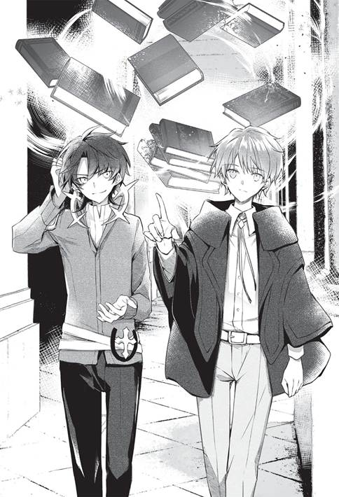

“เมื่อครู่พูดว่าอะไรนะคะ”
มิลิกาหันกลับไปเมื่อได้ยินคำพูดของเขา
เธอทำงานอยู่ในสถานที่เหมือนโรงนา
มีดเล่มใหญ่เปรอะเลือดในมือทอแสงวาว
แต่นี่ไม่ใช่การข่มขู่
“เห็นองค์หญิงชำแหละเหยื่อแล้วบรรยายไม่ถูกเลยแฮะ มาทำอะไรในชนบทกันนะ”
“หลังจากนั้นน่ะ”
นั่นเป็นเรื่องที่เธอไม่ใส่ใจ
—เธอมายังพื้นที่บุกเบิกนานกว่าครึ่งปีแล้ว
ในสถานที่ซึ่งขาดแคลนไปหมดทุกอย่าง มัวทำตัวเป็นองค์หญิงรักสวยรักงามตลอดไปคงไม่ได้
ทั้งยังไม่มีเวลาให้สนใจคำพูดกระเซ้าหรือหยอกล้อ
แต่ละวันมีเรื่องให้ทำมากมาย หากมิลิกาไม่เป็นหัวเรี่ยวหัวแรงก็ไม่อาจเป็นแบบอย่างให้ชาวบ้านที่ร่วมบุกเบิกด้วยกันได้
“หลังจากนั้น? อ๋อ—”
ชายผู้ยืนอยู่ตรงทางเข้าโกดัง
เซออนลีย์ ฟินโรล จอมเวทประจำราชวังทวนคำพูดก่อนหน้านี้
“องค์หญิงตรงนั้นน่ะ สนใจจะไปนครเวทมนตร์ดีราซิกกับฉันไหม...เฮ้ย เดี๋ยวสิ!”
ทันใดนั้น มิลิกา...
ก็เคลื่อนฉับๆ ในแบบฉบับอัศวินเข้าไปใกล้อีกฝ่ายอย่างรวดเร็ว
โดยถือมีดไว้ในมือ
ไม่รู้คิดไปเองหรือหันปลายมีดเข้าหาเซออนลีย์ด้วย
แม้แต่เซออนลีย์ซึ่งผ่านสถานการณ์รุนแรงมาพอสมควร ยังหลงคิดว่าเธอจะเข้ามาแทงจริงๆ เมื่อเห็นการเคลื่อนไหวของเธอ
ยังไม่ได้พูดจาน่าโดนแทงสักหน่อย...ตามความเห็นของตน
“นี่มันเรื่องอะไรกัน!?”
มิลิกาหยุดอยู่แค่นั้น
แน่อยู่แล้ว
เธอปรี่เข้าหาเพราะตกใจกับเรื่องไม่คาดฝันอย่างยิ่งเท่านั้น
หวั่นไหวถึงขนาดลืมวางมีดลงก่อน
เธอยังคงกำมีดไว้ ทั้งยังหันปลายมีดเข้าใส่
แต่ไม่ได้ข่มขู่...กระมัง
“เกือบไป...เล่นเอาขวัญเสียหมด...”
—เซออนลีย์คิดว่าแหย่เล่นมากไปมั้งด้วยความหวาดเสียว
การเคลื่อนไหวเมื่อครู่ของมิลิกาเฉียบขาดปานนั้น
เซออนลีย์ประมาทไปหน่อย...จนเกือบโดนแทง
ถ้ามิลิกาคิดจะทำจริงๆ เขาคงโดนกะซวกท้องไปแล้ว
มิลิกาเข้มแข็งขึ้นอีกเมื่อมาอยู่ในชนบท
ดูจากการเคลื่อนไหวเมื่อครู่จัดว่าแข็งแกร่งสำหรับนักดาบ
เขาจึงคิดว่าอย่าแหย่เธอเล่นให้มากนักจะดีกว่า
เมื่อครู่มีโอกาสโดนแทงเข้าให้แล้ว น่ากลัวจริงๆ...เขาไม่ได้พูดจาเลวร้ายขนาดสมควรโดนแทง แต่ก็ใช่ว่าจะไม่มีเหตุผลที่สมควรโดนแทงเลยเสียหน่อย...
...หลังจากนี้ก็ระวังไว้หน่อยดีกว่า
“เรื่องมันออกจะซับซ้อนหน่อย พอจะมีเวลาคุยกันหน่อยไหมล่ะ”
“...ตอนนี้ยังไม่ได้ค่ะ”
มีดในมือบ่งบอกชัด
ตอนนี้เธอกำลังชำแหละเหยื่อ ไม่สะดวกที่จะคุยเรื่องซับซ้อน อย่างมากก็คุยได้แต่เรื่องสัพเพเหระ
ประเด็นคือเรื่องที่เซออนลีย์มาพูดคุย
“เป็นเรื่องเกี่ยวข้องกับคุนอนคุงเหรอ”
“ใช่แล้วละ”
นั่นย่อมไม่ใช่เรื่องสัพเพเหระ
เป็นเรื่องสำคัญที่ควรใช้เวลานั่งคุยกัน
ที่นี่เป็นดินแดนห่างไกลที่ยังไม่มีชื่อในอาณาจักรฮิวเกรีย
อยู่ในแคว้นที่คุนอนจะได้ครอบครองในอนาคต
มิลิกามาทำการบุกเบิกล่วงหน้าในฐานะคู่หมั้นและคู่ชีวิตในอนาคต
เหตุผลหนึ่งเพราะมีความจำเป็นต้องออกจากปราสาท...แต่อย่าเพิ่งไปสนใจเรื่องนั้นเลย
“—สำรวจละแวกนั้นเสร็จหรือยัง”
“—ขอโทษที รอหน่อยนะ แถวนั้นมีรังฮิไซอยู่”
“—ฮิไซ? นกสินะ ถ้างั้นก็ไปจับมากินกันเถอะ”
“—ฉันต้องการให้รอจนกว่าจะทิ้งรังต่างหาก! อยากตรวจดูลักษณะการใช้ชีวิตของมัน!”
“—เหรอ งั้นเดี๋ยวตรวจดูลักษณะการใช้ชีวิตเสร็จแล้วค่อยกินก็ได้”
“—อย่ากินนะ!”
จอมเวทประจำราชวังสองคนทะเลาะกันอยู่ใกล้ๆ
พวกเขามาที่นี่บ่อยๆ เหมือนมาท่องเที่ยว ช่วยให้การบุกเบิกคืบหน้าเป็นอันมาก
ดูเหมือนเล่นสนุก
แต่ก็ช่วยพัฒนาจนถึงระดับหมู่บ้านได้ในเวลาเพียงครึ่งปี
ทั้งที่เดิมทีเป็นดินแดนรกร้างว่างเปล่า
ทุกอย่างเป็นฝีมือ ไม่สิ เป็นความสามารถของจอมเวทประจำราชวังซึ่งถูกผูกมัดด้วยกฎระเบียบในปราสาทฮิวเกรีย
พวกเขาใช้เวลาตามใจชอบเมื่อมาที่นี่ ถ้ามีอารมณ์ก็ช่วยบุกเบิก สำรวจละแวกใกล้เคียง และสร้างสิ่งของอะไรสักอย่างก่อนกลับไป
นับว่าช่วยได้เยอะมาก
ถึงจะช่วยได้มาก...แต่มิลิกาก็กังวลนิดหน่อยว่าพัฒนาเร็วไปหรือเปล่า
“ยังไงก็ต้องดูเรื่องความพอดีด้วยนะคะ”
มิลิกาเอ่ยกับพวกจอมเวทที่ทะเลาะกันว่าจะกินหรือไม่กินนก
พลางคิดว่าสองคนนี้มาอีกแล้วเหรอ
ถือเป็นขาประจำสำหรับพื้นที่บุกเบิกแห่งนี้แล้ว
ทว่าคราวนี้คงพาเซออนลีย์มาด้วย เพราะคนหนึ่งอยู่ธาตุลม
“อ๊ะ ท่านมิลิกา”
“อย่าห่วงเลย ขืนโดนห้ามเอาป่านนี้จะลำบากเปล่าๆ”
ถ้าทำเกินไปจะห้ามเข้า
ถ้าทำให้มิลิกาไม่พอใจจะห้ามเข้า
ถ้าก่อปัญหากับชาวแคว้นจะห้ามเข้า
เธอวางกฎระเบียบไว้อย่างคร่าวๆ แล้ว ได้แต่หวังว่าจะไม่ทำเรื่องร้ายแรง
“จะว่าไปที่นี่ก็ดีจริงๆ นะ”
“เนอะ อยากใช้ชีวิตบั้นปลายตามสบายในที่แบบนี้จัง”
นี่เป็นพื้นที่บุกเบิกรกร้างว่างเปล่าในบ้านนอกซึ่งแย่ยิ่งกว่าบ้านนอกอันเงียบเหงาเสียอีก
ไม่รู้ว่าถูกใจอะไรกันแน่...แต่ปกติพวกเขาทำงานในปราสาท คงจะชอบความไม่มีอะไรเลยของที่นี่
สำหรับการค้างแรมชั่วคราว
ส่วนคนที่อาศัยอยู่นั้นไม่สะดวกหลายอย่าง
“รู้จักความพอดีหน่อยเถอะนะ...ฉันรู้นะว่าไม่ได้รายงานฉันตั้งหลายเรื่อง”
“...”
“...”
ทั้งสองคนหลบตา
หลังจากข่มขวัญพวกจอมเวทประจำราชวังแล้ว มิลิกาก็ปลีกตัวออกมาและมุ่งหน้าไปยังคฤหาสน์
ไปยังอาคารสวยหรูไม่เข้ากับพื้นที่บุกเบิกแห่งนี้มากที่สุด
“—มาแล้วเหรอ องค์หญิง”
เธอมาสมทบกับเซออนลีย์ซึ่งดื่มชาฝรั่งอยู่ในห้องอาหาร
“เชิญพูดมาได้เลยค่ะ”
มิลิการ้องขอให้พูดเรื่องเมื่อครู่ต่อ
“เธอออกไปก่อนได้ไหม”
เขาบอกให้ลอรา คนรับใช้ที่รินชาฝรั่งให้มิลิกาออกไปก่อน
“คุณจะพูดเรื่องคุนอนคุงสินะ”
“อืม อยากเก็บเรื่องนี้เป็นความลับ”
คงอย่างนั้นแหละ
เดาจากเรื่องที่พูดเมื่อครู่ เซออนลีย์ต้องไปดีราซิกด้วยตัวเอง
เขาคงจะพูดเรื่องนั้น
การที่จอมเวทประจำราชวังออกนอกประเทศถือเป็นเรื่องใหญ่
“ถ้างั้นเธอก็มีส่วนเกี่ยวข้องด้วยค่ะ”
“หา?”
“เธอเป็นคนรับใช้ประจำตัวฉัน ควบคนคุ้มกันด้วย ฉันจะต้องพาเธอไปด้วยในการเดินทาง”
“...อ้อ ทำหน้าที่จับตาดูด้วยสินะ”
มิลิกาเป็นเชื้อพระวงศ์เต็มตัว
แม้ว่าจะชำแหละเหยื่อในพื้นที่บุกเบิกในชนบท แต่ก็เป็นเชื้อพระวงศ์
ย่อมต้องมีคนจับตาดูและคอยทำหน้าที่คุ้มกันด้วย
เธอคือคนคุ้มกันควบคนจับตาดูซึ่งพระราชาส่งมาป้องกัน...ไม่ให้สายเลือดเชื้อพระวงศ์ไปอยู่ต่างแดนเพิ่มขึ้นหรือลดลงโดยไม่มีใครรู้
สรุปว่าเป็นคนสนิทของมิลิกา
ตราบใดที่ไม่คิดต่อต้านพระราชา ย่อมเป็นเช่นนั้นแน่นอน
“งั้นก็ช่างเถอะ
“คุนอนคิดค้นในสิ่งที่เหลือเชื่อขึ้นมา เรื่องนั้นทำให้เบื้องบนสั่งให้ฉันไปจัดการ”
สิ่งที่เหลือเชื่อ
“คุนอนคุง...”
มิลิกาถอนหายใจ
ก่อเรื่องอีกแล้วเหรอ
เรื่องที่อาณาจักรฮิวเกรียไม่อาจเพิกเฉย
ไม่รู้ว่าเป็นสิ่งประดิษฐ์หรืออุปกรณ์เวท
อย่างไรก็ตาม ดูเหมือนเขาจะสร้างบางอย่างที่ทำให้จอมเวทประจำราชวังต้องไปด้วยตัวเอง
“เหมือนเดิมเลยนะ”
คุนอนเพิ่งเลื่อนชั้นเป็นนักเรียนปีสองของโรงเรียนเวทมนตร์
แต่กลับสร้างผลงานขนาดที่ภาครัฐต้องเคลื่อนไหวอีกแล้ว
ช่างเป็นคู่หมั้นที่เก่งกาจจริงๆ
เก่งกาจจนน่าหนักใจ
“เรื่องแค่นั้นลูกศิษย์ฉันทำได้อยู่แล้ว สมัยเป็นนักเรียนฉันยอดเยี่ยมกว่านี้อีก”
“เรื่องนั้นช่างเถอะ”
มิลิกาคุยต่อ
เพราะอีกฝ่ายทำท่าจะเล่าเรื่องที่ไม่อยากฟัง
“ว่าแต่ให้ฉันไปดีราซิกด้วยจะดีเหรอ ฉันร่วมทางไปกับท่านเซออนลีย์ได้เหรอ”
“เบื้องบนอนุญาตแล้ว พูดง่ายๆ คือพ่อเธอบอกให้ไปได้”
น่าจะเป็นเช่นนั้น
มิลิกาอยู่ในฐานะที่ข้ามพรมแดนโดยพลการไม่ได้
ในเมื่อเขาบอกว่าไปได้ย่อมต้องได้รับอนุญาตแล้วอย่างแน่นอน
“แต่ถ้าเธอไม่อยากไป”
จะปฏิเสธก็ได้สินะ
“ไปค่ะ”
เธอไม่ปล่อยให้พูดจนจบหรอก
“ว่าแล้วเชียว งั้นจะบอกรายละเอียดให้ฟัง—”
เซออนลีย์เริ่มอธิบาย
เรื่องแรกมีเวลานิดเดียวก่อนออกเดินทาง
จะออกเดินทางพรุ่งนี้หรือมะรืนนี้
ตามที่เขาบอกคือ “นี่เป็นการเดินทางลับๆ ของทั้งจอมเวทประจำราชวังและเชื้อพระวงศ์ ต้องรีบไปรีบกลับโดยไม่ให้ใครรู้ ”
อยากสะสางธุระให้เสร็จโดยเร็วเพื่อปิดบังข้อเท็จจริงเรื่องการข้ามพรมแดน
ต่อให้เกิดปัญหาเล็กน้อย แต่ถ้ากลับถึงฮิวเกรียก่อนที่เรื่องจะถูกเปิดเผยก็น่าจะแก้ไขได้ไม่ยาก
ปัญหาคือระยะเวลาในการเดินทาง
เซออนลีย์มีเวลาไม่มากนัก พำนักที่ดีราซิกได้อย่างมากไม่กี่วัน ย่อมต้องเดินทางอย่างเร่งรีบ
ประมาณว่าไปถึงแล้วกลับทันที
“ไม่มีปัญหาค่ะ”
เพราะจะได้พบคุนอน
คู่หมั้นอายุน้อยกว่าซึ่งแยกจากกันมานานกว่าหนึ่งปี
ผู้อ้างตัวเป็นสุภาพบุรุษ แต่ส่งจดหมายไม่ชอบมาพากลมาอยู่เรื่อย ทำให้เธอไม่สบายใจเรื่องความสัมพันธ์กับผู้หญิง
เธออยากเจอคุนอน
อยากเจอเขามาก
และอยากตรวจดูความสัมพันธ์กับผู้หญิงอื่นให้ชัดเจนด้วยการลงพื้นที่ โดยเฉพาะยัยคนที่เป็นสตรีศักดิ์สิทธิ์ ไม่สนหรอกว่าเป็นเพื่อนร่วมรุ่นหรือไม่ แต่ท่าทางจะสนิทสนมกันเหลือเกิน ชักจะได้ใจไปหน่อยแล้ว เพราะเป็นสตรีศักดิ์สิทธิ์หรือเปล่า เป็นบุคคลสำคัญของเซนทรานส์แล้วยังไง ตนเป็นถึงองค์หญิงเชียวนะ...ฝ่ายโน้นฐานะเหนือกว่างั้นเหรอ ฐานะสูงส่งเพราะเป็นสตรีศักดิ์สิทธิ์ก็เลยทำให้ได้ใจไปหน่อยสินะ เอาเป็นว่าขอเข้าไปทักทายหน่อยแล้วกัน แค่ทักทายก็พอ หากเจอแล้วไม่สบอารมณ์อาจมีตบตีกันบ้าง แล้วค่อยยืนกรานว่าเป็นการสร้างมิตรภาพในแบบของผู้หญิงก็ได้ เดี๋ยวจะใช้กำลังสั่งสอนให้รู้ว่ามายุ่งกับผู้ชายของคนอื่นแล้วจะเป็นยังไง ต้องใช้กำลังนี่แหละ
เพียงแต่
อดคิดไม่ได้
ถ้าคุนอนไปหลงใหลผู้หญิงคนอื่น หรือมีผู้หญิงที่ชอบมากกว่ามิลิกา...ถึงตอนนั้น...
อย่าเพิ่งคิดอะไรไปมากกว่านี้เลย
—เธอจะได้พบคุนอน แม้จะไม่นานนัก และก็มีเรื่องอื่นที่อยากทำที่ดีราซิกด้วย
ถ้าอย่างนั้นก็ต้องไปสถานเดียว
“มาด้วยเหรอ เซออน”
คนที่เดินสวนกับมิลิกามาที่ห้องอาหารคือดาลิโอ แซนส์ สังกัดกองอัศวินที่สาม กับลาวีเอลต์ ฮูส อัศวินหญิงสังกัดเดียวกับเขา
สองคนนี้ออกจากเมืองหลวงมาคุ้มกันมิลิกาอยู่ที่นี่ เป็นการทำภารกิจพิเศษ
ลาวีเอลต์ร่วมทางกับดาลิโอมายังชนบทด้วยเหตุผลที่ว่า ‘บางเวลาคงจำเป็นต้องใช้คนคุ้มกันหญิง’
ทว่าการแต่งกายที่ดูคล่องตัวและออกจะเปรอะเปื้อนในตอนนี้ เหมือนนักผจญภัยมากกว่าอัศวิน
“โอ๊ะ ดาลิโอ ฉันรับฝากจดหมายมาให้นายด้วยนะ”
“จดหมาย?”
เซออนลีย์ดึงจดหมายออกจากกระเป๋าแล้วส่งให้ดาลิโอ
ดาลิโอฉีกซองออกแล้วตรวจดูข้างในทันที
“—หืม จะไปดีราซิกเหรอ...”
จดหมายที่ว่าคือหนังสือคำสั่งนั่นเอง
เซออนลีย์คาดการณ์ได้โดยไม่ต้องดูเนื้อหา
“ถ้าองค์หญิงไป นายก็ต้องไปด้วยใช่ไหมล่ะ”
“หือ? อืม...ไม่ใช่ก็ใกล้เคียง บอกท่านมิลิกาไปแล้วเหรอ”
“เมื่อครู่นี้เอง ป่านนี้ไปเตรียมตัวเดินทางแล้วละ แต่ไม่มีแผนจะค้างกลางแจ้งอยู่แล้ว ไม่ต้องเอาสัมภาระไปมากนักหรอก
“นายก็ไปเตรียมตัวเดินทางสิ ถ้าไม่ติดอะไรเดี๋ยวจะออกเดินทางพรุ่งนี้เลย”
“—รุ่นพี่ จะไปไหนเหรอคะ”
ลาวีเอลต์ดูความเป็นไปเงียบๆ แล้วจึงเอ่ยถาม
“มีหนังสือคำสั่งออกมาน่ะ ให้เดินทางร่วมกับท่านมิลิกา แล้วก็จับตาดูเซออนด้วย”
“เดินทางเหรอ”
“ฉันจะไปดีราซิก ไปไม่นานหรอก”
“แล้วฉันล่ะ”
“ไม่ได้เขียนชื่อเธอไว้ อยู่ที่นี่ก่อนละกัน ฝากดูแลพื้นที่บุกเบิกระหว่างที่ฉันไม่อยู่ด้วย”
“เอ๋...ซื้อของฝากมาให้ด้วยนะ รุ่นพี่”
“ได้สิ—ว่าแต่”
ดาลิโอดูหนังสือคำสั่งอีกครั้งแล้วมองไปที่เซออนลีย์
“เซออน อันที่จริงภารกิจหลักของฉันคือการจับตาดูนายมากกว่านะ ในนี้เขียนเน้นไว้ว่าให้จับตาดูนายมากกว่าการคุ้มกันท่านมิลิกา”
เรื่องนั้นอยู่ในการคาดการณ์เช่นกัน
ดูเหมือนมิลิกาจะมีคนรับใช้ประจำตัวอยู่แล้ว การคุ้มกันและจับตาดูองค์หญิงจะเป็นหน้าที่ของคนคนนั้น
“แถมยังมีคำสั่งให้จับตาดูความสัมพันธ์กับบรรดาเพื่อนของนายเป็นพิเศษด้วย...”
“ความสัมพันธ์กับบรรดาเพื่อนของฉัน? จะจับตาดูอะไรพรรค์นั้นเนี่ยนะ”
“เห็นบอกให้ถามเจ้าตัวเมื่อจำเป็นน่ะ”
เซออนลีย์ได้ยินอย่างนั้นแล้วก็รู้สึกลำบากใจ
“จะให้บอกอะไรเล่า ฉันเคยอยู่ดีราซิกและเรียนที่โรงเรียนเวทมนตร์มาก่อนนะ
มีคนรู้จักที่นั่นตั้งเยอะ ไหนๆ จะได้ไปแล้วก็มีหลายคนที่อยากแวะไปทักทาย มีอาจารย์ที่เคยสอนด้วย ไม่ได้เจอกันนานหลายปี คิดถึงคนนั้นคนนี้เต็มไปหมด ตั้งใจจะจับตาดูให้หมดเลยเหรอ เยอะเอาการเชียวนะ”
—ดาลิโอพยักหน้าเงียบๆ แบบเข้าใจเรื่องนั้น
อุตส่าห์ได้ไปยังสถานที่ที่เคยใช้ชีวิตอยู่ที่นั่นก็ย่อมต้องอยากแวะไปหาคนรู้จัก แวะไปทักทายคนที่เคยช่วยดูแลในสมัยนั้น
“แถมเพื่อนร่วมงานที่ปราสาทยังฝากซื้อของอีก เห็นฉันเป็นคนใช้ไปได้”
—ดาลิโอพยักหน้าเงียบๆ อย่างนึกสมน้ำหน้า
นานๆ ทีผู้ชายวางก้ามเช่นนี้ควรทำอะไรแบบนั้นบ้าง เพราะมักก่อความเดือดร้อนให้คนรอบข้างเป็นประจำ
“นายสนใจเรื่องเพื่อนคนไหนบ้างรึเปล่า”
“คุนอนไง ไม่เห็นต้องถาม”
สาเหตุที่ต้องไปดีราซิกคือคุนอน
ด้วยเหตุนี้จึงสนใจเรื่องลูกศิษย์ของตน
ซึ่งตอนนี้ได้กลายเป็นคนใกล้ชิดกัน แน่นอนว่าคุนอนก็คงนับเป็นเพื่อนคนหนึ่ง
“เดิมทีจุดหมายหลักของการเดินทางคือไปหาหมอนั่นนะ”
“งั้นเหรอ แต่สำหรับท่านคุนอนคงต่างกันออกไป มีใครอีกไหม”
คนอื่นเหรอ
“...นึกไม่ออกแฮะ ถ้าพูดถึงเพื่อนฉันในระดับที่พวกเบื้องบนของฮิวเกรียจะสนใจก็คงมีแต่คุนอนมั้ง”
เพราะเขาจะไปตามคำสั่งของพวกเบื้องบน
ให้เซออนลีย์ผู้เป็นอาจารย์ไปหาลูกศิษย์
จะมีใครที่พวกเบื้องบนสนใจไปมากกว่านี้—อืม จะว่าไปก็มีแฮะ
ผู้ยิ่งใหญ่คนนั้น
“เกรย์ ลูวา งั้นเหรอ”
เซออนลีย์เอ่ยชื่อแม่มดอันดับหนึ่งของโลก
เกรย์ ลูวา ผู้มีชื่อเสียงชนิดที่คนทั่วโลกน่าจะรู้จัก
แม่มดที่จอมเวททุกคนล้วนชื่นชม
เรื่องราวของเธอถูกแต่งเป็นนิทานและละครเวที แถมยังมีตำนานและเรื่องเล่าขานเพ้อฝันมากมาย จอมเวทเก้าสิบเปอร์เซ็นต์ต้องเคยอ่าน ‘เวทมนตร์พื้นฐานสำหรับมือใหม่’ ที่เธอเขียน แม้แต่เซออนลีย์ยังตั้งอกตั้งใจอ่านมาก นั่นเป็นหนังสือที่ควรอ่าน เพราะเป็นหนังสือเล่มเดียวที่ครอบคลุมเรื่องพื้นฐานทั้งหมด
อย่าว่าแต่ฮิวเกรียเลย แม้แต่ผู้มีอำนาจทั่วโลกยังสนใจ
“อ่า...งะ...งั้นเหรอ ใหญ่โตเกินไปรึเปล่า”
ดาลิโอว้าวุ่น
แม้ใจอยากปฏิเสธ แต่เธอก็เป็นคนที่น่าสนใจจริงๆ
ขนาดตนไม่ค่อยเกี่ยวข้องกับเวทมนตร์ยังรู้สึกสนใจนิดหน่อย
“แต่ก็น่าสนใจใช่ไหมล่ะ”
“ก็น่าสนใจอยู่หรอก...”
ดาลิโอครางอือ—
“มีแผนไปเจอด้วยเหรอ จะได้เจอจริงเหรอ”
“ไม่มีแผนไปเจอหรอก แต่จะเกิดอะไรขึ้นก็ไม่รู้ใช่ไหมล่ะ มีความเป็นไปได้ว่าอีกฝ่ายอยากเจอเองก็ได้ ยังไงก็คนรู้จักกัน”
ระหว่างที่ศึกษาอยู่ เขาเคยโดนเกรย์ ลูวา ดุเอาโดยตรง
เพราะตอนนั้นเซออนลีย์ทำเกินไป
“...เอาเถอะ นึกภาพไม่ออกสินะ”
จริงอยู่ว่ารู้จักกัน
แต่ก็ไม่เคยเจอกันสักหนตั้งแต่เรียนจบ และไม่เคยเขียนจดหมายติดต่อกัน
เขาเรียนจบนานหลายปีแล้ว อาจยังจำชื่อได้รางๆ แต่คงจะลืมหน้าไปแล้วกระมัง
เกรย์ ลูวา ยิ่งใหญ่ปานนั้น เซออนลีย์ดูกระจอกไปเลยเมื่อเทียบกับเธอ
คนยิ่งใหญ่ระดับเธอนับเป็นเพื่อนเซออนลีย์ได้หรือเปล่านะ
นึกภาพไม่ออกเลยสักนิด
“...ผู้ชายอายุขนาดนี้ยังไม่เข้าใจอีกเหรอ”
ลาวีเอลต์มองดูอัศวินรุ่นพี่กับจอมเวทประจำราชวงศ์ด้วยสายตาดูแคลน
—ตอนแรกเธอนึกว่าแกล้งทำเป็นไก๋
แต่ท่าทางสองคนนี้จะคิดไม่ออกจริงๆ
วินาทีที่คิดแบบนั้นก็รู้สึกระอาขึ้นมา
“การคบหาเพื่อนของผู้ใหญ่ย่อมเกี่ยวพันกับความรักใช่ไหมล่ะ เรื่องผู้หญิงยังไงล่ะ”
เกี่ยวพันกับความรัก
ชายสองคนไม่ทันนึกถึงเรื่องนั้น เลยมองดูอัศวินหญิงอย่างตกตะลึง
“คนรักในอดีต ผู้หญิงที่คุ้นเคย ผู้หญิงที่หลอกให้หลงแล้วทิ้ง
“หรือผู้หญิงที่เป็นเพื่อนสนิทจนเกือบถึงขั้นคนรัก
“คนที่ทำให้จิตใจท่านเซออนลีย์หวั่นไหวได้ พูดง่ายๆ คือผู้หญิงในอดีต ถ้าได้พบกับคนแบบนั้น อาจถึงขั้นไม่ยอมกลับฮิวเกรีย อาจแอบหนีตามกันไป หรือถ่านไฟเก่าอาจปะทุขึ้นมาก็ได้
“เรื่องพวกนั้นน่าเป็นห่วงมั้ง...รู้จักคิดหน่อยสิรุ่นพี่ ทั้งที่เนื้อหอม แต่ดันทึ่มเป็นบ้า เดี๋ยวก็ทำให้สาวชาวบ้านบางคนน้ำตาตกอีกหรอก”
เมื่อโดนรุ่นน้องทุบไหล่แรงๆ ดาลิโอก็เอ่ยว่า “ทะ...โทษที”
ปกติเซออนลีย์จะหยามว่า ‘ทุเรศ’ และหัวเราะเยาะดาลิโอ
“...ผู้หญิงในอดีตเหรอ ไม่ทันนึกเลยจริงๆ”
แต่ตอนนี้ติดใจคำพูดของเธอมากกว่า
ลาวีเอลต์อาจพูดถูกจริงๆ ก็ได้
ถ้าอย่างนั้น—จริงสิ
เขานึกถึงบางคนได้
“จะ...จะว่าไปแล้ว เซออน”
ดาลิโอเอ่ยขึ้น
เพื่อหลีกหนีจากแววตาเย็นชาของลาวีเอลต์
“ฉันเคยได้ยินข่าวลือของนาย รู้สึกว่าจะสนิทสนมเป็นพิเศษกับจอมเวทมีชื่อเสียงที่ถูกเรียกขานว่า ‘นักคุณไสยห้วงวิบัติ’ ”
เซออนลีย์เดาะปาก
“น่ารำคาญสุดๆ การมีชื่อเสียงก็ลำบากเหมือนกันแฮะ”
เซออนลีย์ ฟินโรล มีชื่อเสียงระดับโลกในฐานะช่างเทคนิคเวท
เขายังโสด หน้าตาหล่อเหลา เป็นจอมเวทเก่งกาจที่สร้างผลงานไว้ไม่น้อย ในเมื่อบุคคลชั้นเลิศขนาดนี้ยังโสดก็ย่อมตกเป็นข่าวลือในวงสังคม
ส่งผลให้มีข่าวลือมากมายแพร่ออกมา จริงบ้างไม่จริงบ้าง
จอมเวทประจำราชวังไม่เกี่ยวข้องกับวงสังคมอยู่แล้ว เขาจึงไม่ใส่ใจสักนิดเดียว
ทว่าท่ามกลางข่าวลือเหล่านั้น
มีความจริงเพียงหยิบมือหนึ่ง
“ฉันก็เคยได้ยินนะ
“ผู้หญิงในอดีตของท่านเซออนลีย์ รู้สึกจะชื่อคุณไอออนสินะ”
“ไม่ใช่ผู้หญิงของฉันสักหน่อย”
เขาปฏิเสธแบบนั้น
“...แต่น่าจะหมายถึงยัยนั่นละนะ”
เพราะไอออน
อยู่ในนครเวทมนตร์
ตอนนี้ก็ยังอยู่ในโรงเรียนเวทมนตร์แน่นอน
จอมเวทเก่งกาจผู้ได้รับสมญาอลังการว่า ‘นักคุณไสยห้วงวิบัติ’ ที่พวกแหล่งข่าวบางส่วนรู้จักกันดี
หากพูดถึงอดีตของเซออนลีย์ย่อมมองข้ามเธอไม่ได้
พวกเบื้องบนคงสนใจเรื่องของเธอนั่นแหละ
“นายมีความสัมพันธ์ยังไงกับคุณไอออนล่ะ ช่วยเล่าให้ฟังคร่าวๆ ได้ไหม”
“ฉันไม่อยากคุยเรื่องผู้หญิงกับนาย”
“ฉันก็เห็นด้วย แต่นี่เป็นส่วนหนึ่งของงาน ฉันต้องเกาะติดนายในพื้นที่ตลอดเวลา ถ้าไม่รู้ล่วงหน้าไว้บ้างอาจตอบสนองต่อสถานการณ์ไม่ถูกต้องก็ได้”
ได้ยินอย่างนั้นก็แย้งไม่ออก
ถึงจะเป็นจอมเวทประจำราชวังก็ต่อต้านเจตจำนงของภาครัฐไม่ได้
แม้จะมีฐานะใหญ่โต สุดท้ายก็เป็นข้าราชการคนหนึ่ง
“...ฉันไม่คิดจะไปเจอยัยนั่นหรอก และคงไม่ได้เจอด้วย”
เห็นได้ชัดว่าถ้าเจอกันจะเกิดเรื่องยุ่งยากแน่
ยิ่งไปกว่านั้นยังเป็นการตัดสินใจและการแสดงความรับผิดชอบของเธอ
—คราวหน้าฉันจะเป็นฝ่ายไปหาเธอเอง
สัญญาในตอนนั้นยังไม่ลุล่วง
ดังนั้นเซออนลีย์จึงยังไม่คิดจะไปหา
“ฉันก็สนใจเรื่องราวความรักของท่านเซออนลีย์ผู้โด่งดังระดับโลกอยู่เหมือนกันนะ”
เรื่องราวความรัก
อัศวินหญิงบอกว่าสนอกสนใจเรื่องรัก
“...เข้าใจแล้ว จะเล่าให้ฟังนิดหนึ่งก็ได้”
ถึงจะไม่อยากเล่า แต่ก็ต้องตอบดาลิโอไปตามหน้าที่
คนนิสัยจริงจังอย่างเขาคงไม่ยอมเลิกราจนกว่าจะได้ฟังคำตอบ
ที่จริงลาวีเอลต์ไม่ได้เกี่ยวข้องด้วยเลย แต่ถ้าขืนไล่ออกไปเจ้าตัวคงโวยวาย เดี๋ยวจะวุ่นวายเปล่าๆ
เช่น เอาไปฟ้องมิลิกา จนองค์หญิงต้องตามมาตอแยด้วยความสนใจ ขืนเป็นอย่างนั้นจะเลวร้ายเข้าไปใหญ่
“เล่าตรงนี้ไม่สะดวก ไว้คืนนี้จะเล่าในห้องฉันระหว่างดื่มก็แล้วกัน”
ถ้าไม่ได้ดื่มก็ไม่มีอารมณ์จะเล่าหรอก
โดยปกติเขาไม่อยากพูดเรื่องสมัยนั้น
เพียงแต่เลี่ยงไม่ได้
ทุกคนแยกย้ายกันไปหลังตกลงกันได้
พอตกดึกอัศวินสองคนก็มาหาพร้อมเหล้าและกับแกล้ม
หลังปรับแสงไฟให้อ่อนลงเล็กน้อยก็ดื่มก่อนหนึ่งถ้วย
พร้อมที่จะเล่าให้ฟังแล้ว
“ฉันอาศัยอยู่กับยัยนั่นตั้งแต่วันแรกที่ได้พบกัน”
“หา?”
“โอ้ สมแล้วที่เป็นจอมเวทชื่อดัง ใช้ชีวิตร่วมกันทันทีเชียว”
เอาเถอะ ถ้ามองแต่ข้อเท็จจริงก็จะเห็นเป็นแบบนั้น
“—เรื่องนั้นมันมีเหตุผล ฟังไปเงียบๆ เถอะน่า”
แล้วเซออนลีย์ก็ตั้งต้นเล่า
เซออนลีย์กับไอออนพบกันครั้งแรกตรงหน้าแผนกธุรการของโรงเรียนเวทมนตร์
เซออนลีย์กำลังจะเข้าชั้นเรียนระดับพิเศษในปีการศึกษานั้น
ส่วนไอออนกำลังจะอำลาโรงเรียนเวทมนตร์เมื่อสิ้นสุดปีการศึกษาที่ผ่านมา
ณ สถานที่ซึ่งผู้มาถึงกับผู้ลาจากสวนทางกัน
ทั้งคู่ได้พบกันโดยบังเอิญ
“อะ...เอ่อ นี่เธอ...”
ผู้หญิงตัวสูง—ไอออนงุนงงเพราะคำพูดของเซออนลีย์
เมื่อครู่เขาพูดว่ายังไงนะ
อยู่ด้วยกัน?
ไม่สิ ที่สำคัญกว่านั้น
“...เอ่อ...ฉันใช้เวทมนตร์ไม่ได้นะ...”
“...หา?”
ไอออนบอกอย่างไม่ปิดบัง
เหตุผลที่ตนต้องออกจากโรงเรียนเวทมนตร์
ไม่อาจอยู่ที่นี่ต่อไปได้
“ทำไมล่ะ”
เซออนลีย์ย่อมถามแบบนั้น ก่อนเบรกว่า “เดี๋ยวนะ” พลางส่ายหัว
“ถ้ารู้เรื่องนั้นคงไม่ลาออกจากโรงเรียนสินะ มีเหตุผลบางอย่างที่ทำให้ใช้เวทมนตร์ไม่ได้ใช่ไหม ถ้างั้นก็แปลว่าใช้ ‘คำสาป’ ไม่ได้ด้วยเหรอ
“ดีละ เริ่มจากเรื่องนั้นแหละ ต้องทำให้เธอใช้เวทมนตร์ให้ได้ก่อน”
“เอ๊ะ? ตะ...แต่ว่า...”
“ฉันรู้น่า ไม่ง่ายใช่ไหมล่ะ เท่าที่ดูเธอคงพยายามมาไม่น้อย
“แต่ไม่ต้องห่วง”
ดวงตาข้างซ้ายของไอออนที่หวั่นไหวด้วยความว้าวุ่นมี ‘ตราไสย’
เซออนลีย์แหงนหน้ามองดวงตานั้นพลางโพล่งออกมาอย่างองอาจด้วยความมั่นใจเต็มเปี่ยม
“ฉันเป็นอัจฉริยะ เดี๋ยวฉันจัดการเอง”
ไอออนมองสายตาแข็งกร้าวของเขาด้วยความตะลึง
รู้สึกเหมือนเวลา ลมหายใจ
แม้กระทั่งหัวใจก็หยุดลงด้วย
“—นี่~”
พนักงานต้อนรับหญิงทักมาอย่างเนือยๆ
“สรุปว่าเธอ เซออนลีย์คุง”
“อืม”
“ไม่เข้าหอสินะ”
เซออนลีย์มายื่นเรื่องเข้าหอ
ก่อนตัดสินใจว่าจะอาศัยอยู่กับไอออนแทน
ตามสถานการณ์ที่เกิดขึ้น
“ใช่แล้ว แต่ช่วยแนะนำนายหน้าอสังหาฯให้ทีนะ”
ถึงกระนั้นก็ไม่เสียใจภายหลัง และไม่คิดจะกลับคำ
หออยู่ภายในเขตโรงเรียนเวทมนตร์
พูดง่ายๆ คืออยู่ใกล้สิ่งปลูกสร้างของโรงเรียน จึงมีข้อดีตรงการใช้ชีวิตนักเรียนได้อย่างคุ้มค่า
ชั้นเรียนระดับพิเศษสามารถใช้งานสิ่งปลูกสร้างได้ตามใจชอบ หากพูดอย่างสุดโต่งคืออาศัยอยู่ในสิ่งปลูกสร้างอย่างหอสมุดก็ยังได้
อ่านหนังสือจนกว่าจะเบื่อแล้วนอน พอตื่นมาก็อ่านหนังสือต่อ มีหนังสือที่ไม่ได้อ่านมากมายอยู่ใกล้มือ จึงไม่ต้องกลัวว่าจะอ่านหมด วิเศษสุดๆ
แต่ขืนไปนอนค้างจริงๆ ต้องโดนดุเอาแน่นอน
ถึงอย่างนั้น
เขาได้พบไอออนที่มี ‘ตราไสย’ สัญลักษณ์ของนักคุณไสยในดวงตาข้างซ้าย
แถมยังมีความเป็นมาเกี่ยวข้องกับเวทมนตร์อีกไม่น้อย
—เรื่องนี้น่าสนใจกว่า
เขาสามารถนอนค้างในหอสมุดได้ทุกเมื่อ แต่ถ้าไม่รั้งไอออนไว้ตอนนี้ต้องไม่มีโอกาสได้เจออีกแน่
ถ้าอย่างนั้นควรให้ความสำคัญกับผู้หญิงคนนี้มากกว่า
“เอ่อ...จะอาศัยอยู่ด้วยกันสองคนเหรอ”
“ใช่”
ข้อดีของการอยู่หอคือเรื่องระยะทาง
แม้จะต้องรับผิดชอบเรื่องค่าครองชีพเอง แต่ทางโรงเรียนจะดูแลเรื่องค่าเช่าบ้านให้ จึงไม่ลำบากเรื่องที่พัก แค่อาศัยอยู่ใกล้โรงเรียนเท่าที่จะเป็นไปได้ก็พอ
“แล้วคุณไอออนล่ะ จะเอาอย่างนั้นเหรอ...อา ไม่จำเป็นต้องถามสินะ”
ไอออนไม่ใช่นักเรียนของโรงเรียนเวทมนตร์แล้ว
ดังนั้นไม่ว่าจะอาศัยอยู่ที่ไหน ทางโรงเรียนก็ไม่เกี่ยว
ต่อให้ใช้ชีวิตร่วมกับผู้ชาย
อาศัยอยู่กับผู้ชายที่เพิ่งพบกันก็ตาม
“เอาบัตรนักเรียนของชั้นเรียนระดับพิเศษมารึเปล่า น่าจะอยู่รวมกับใบแจ้งสอบผ่านนะ”
“อ๋อ เอามาสิ”
เขาเอามาพร้อมใบแจ้งสอบผ่าน
เพราะอ่านเสร็จก็ตรงมายังแผนกธุรการเลย
“งั้นเอาไอ้นั่นไปหานายหน้าอสังหาฯริมถนนใหญ่เลย ขอเพียงมีไอ้นั่น ไม่ว่าที่ไหนก็ต้อนรับขับสู้”
“เข้าใจแล้ว! ขอบใจนะ!”
เซออนลีย์กล่าวลาพนักงานต้อนรับหญิงแล้วแหงนมองไอออนอีกครั้ง
“—ฉันชื่อเซออนลีย์ อนาคตจะถูกเรียกขานว่าจอมเวทอัจฉริยะ ฝากตัวด้วยนะ”
“—อ๊ะ อืม...ฉันชื่อไอออน คนไม่เอาไหนที่ใช้เวทมนตร์ไม่ได้...”
ไอออนพูดเสียงเบาหวิวด้วยใบหน้าห่อเหี่ยว
เซออนลีย์กุมมือเธอแน่น
“เรียกฉันว่าเซออนเถอะ! ฝากตัวด้วยนะ!”
“ฝะ...ฝากตัว...ด้วย”
แค่จับมือกัน
ไอออนรู้เรื่องนั้น
—แต่หวั่นไหวเป็นอันมาก
พวกเขาไปหานายหน้าอสังหาฯ แล้วเลือกเช่าบ้านที่กว้างขวางพอสมควร
ไอออนคอยกระซิบบอกเซออนลีย์ซึ่งไม่เคยอาศัยอยู่คนเดียว
“อยู่ใกล้โรงเรียนก็จริง แต่ไกลจากตลาดนะ...”
และ
“เอาห้องเยอะๆ ดีกว่า...จอมเวทมักจะเก็บพวกวัตถุดิบทางเวทมนตร์และบันทึกต่างๆ เอาไว้จนเป็นกองพะเนินอย่างรวดเร็วเลยน่ะนะ...”
แล้วก็
“เอาสวนกว้างๆ หน่อยเถอะ...ใช้ฝึกเวทมนตร์ได้...”
เป็นต้น
“หืม”
เซออนลีย์ชื่นชม
เดิมทีก็คิดว่าอาศัยอยู่ที่ไหนก็ได้
พอคิดอย่างใจเย็นก็พบว่ามีปัจจัยสำคัญอีกหลายอย่างที่ควรคำนึง จะว่าไปโรงแรมโกโรโกโสที่เคยพักอยู่ก็มีปัญหาหลายอย่าง ดังนั้นคิดให้รอบคอบก่อนตัดสินใจดีกว่า
แต่ก็นึกขอบคุณคุณป้าที่โรงแรมนั่น
เขาเกลียดการติดหนี้ จึงตั้งใจว่าสักวันจะตอบแทนให้ แต่เอาไว้หลังจากได้ดิบได้ดีแล้วนะ เดี๋ยวต้องไปเอาข้าวของทีหลังด้วย
เมื่อปรึกษากันแล้วจึงเช่าบ้านเดี่ยว
กว้างไปนิดสำหรับการอาศัยอยู่สองคน แต่ก็ดีกว่าการอยู่แคบๆ
และแล้ว
ทั้งสองคนมาถึงบ้านเช่า ตรวจดูภายในบ้านทุกซอกทุกมุมก่อนกลับไปที่ห้องนั่งเล่น
ดูเหมือนจะคำนึงถึงนักเรียนที่จะมาเข้าเรียนในปีนี้อยู่ก่อนแล้ว จึงทำความสะอาดเพื่อเตรียมไว้ให้เช่าล่วงหน้า
มีเครื่องเรือนและเครื่องนอนครบครัน
จำนวนห้องเยอะ ห้องที่มีเตียงมีมากถึงสี่ห้อง
รู้สึกกว้างเกินกว่าจะอาศัยอยู่กันแค่สองคนไปนิด...แต่ก็คงดีกว่าแคบแน่ๆ
“อะ...เอ่อ เซออนคุง”
ที่ผ่านมา
ไอออนตกกระไดพลอยโจนจนมาถึงที่นี่ด้วยกัน
แต่พอแน่ใจว่าเซออนลีย์ตั้งใจจะอาศัยอยู่ด้วยกันจริงๆ เธอก็บอกเรื่องที่คิดมาตลอด
“กำหนดระยะเวลาเอาไว้เถอะ”
“ระยะเวลา?”
“อืม คือว่า...เรื่องคำสาป และเวทมนตร์ของฉัน...”
เป้าหมายของเซออนลีย์คือ ‘ไสยเวท’ เวทมนตร์เฉพาะตัวของไอออนซึ่งเป็นนักคุณไสย
แต่น่าเสียดายที่ไอออนใช้เวทมนตร์ไม่ได้
ตัวเธอเองยังแปลกใจ และคิดว่าไร้เหตุผลสิ้นดี
ที่ดวงตาข้างซ้ายมีตราไสย และมีตราสัญลักษณ์บนร่างกาย
แต่เวทมนตร์กลับไม่ทำงาน
‘ไสยเวท’ หรือ ‘คำสาป’ เป็นเวทมนตร์เฉพาะตัว ไม่ว่าเซออนลีย์พยายามอย่างไรก็ไม่น่าจะใช้ได้
แต่เรื่องนั้นยังไม่ใช่ปัญหาในตอนนี้
“ขืนมัวใส่ใจคนอย่างฉันจะเสียเวลาเปล่าๆ นะ...ดังนั้นกำหนดระยะเวลาเอาไว้เถอะ ถ้าแก้ปัญหาภายในระยะเวลาที่กำหนดไม่ได้ ฉันจะย้ายออกไป...”
เธอยอมอยู่กับเซออนลีย์ไปจนถึงตอนนั้น
ระหว่างที่ตกกระไดพลอยโจนจนมาถึงที่นี่ ไอออนได้ข้อสรุปอย่างนั้น
เธอไม่จำเป็นต้องรีบกลับบ้านเกิด การหนีกลับไปทั้งอย่างนี้มันออกจะขมขื่นเกินไป จึงยังไม่อยากกลับ
แต่ก็ไม่อาจปล่อยให้เซออนลีย์เสียเวลาเปล่าได้
เวลามีจำกัด
ไอออนกลัวว่าเวลาที่เอามาใส่ใจตนของอีกฝ่ายอาจสูญเปล่า
นี่เป็นเวลาของนักเรียนใหม่อนาคตไกลในชั้นเรียนระดับพิเศษ บอกไม่ถูกเลยว่ามีค่าสักแค่ไหน
“งั้นเหรอ...นั่นสินะ งั้นสักสองเดือนก็แล้วกัน”
“สองเดือนเหรอ”
“ใช่ ฉันอยากทำความคุ้นเคยกับโรงเรียนก่อน และต้องการเวลาในการตรวจดูสภาวะของเธอด้วย สองอย่างนี้ใช้เวลาหนึ่งเดือน แล้วเดือนที่สองค่อยเริ่มลงมืออย่างจริงจัง
“ถ้าพยายามสองเดือนแล้วยังไม่เห็นความคืบหน้าใดๆ ฉันจะยอมตัดใจนะ”
เซออนลีย์พูดจบแล้วหันไปหาไอออน
ตามด้วยการก้มหัวให้
“ขอเวลาสองเดือนของเธอให้ฉันเถอะ ฉันจะไม่ทำให้เธอเสียใจภายหลังแน่”
“...อืม”
และแล้วการใช้ชีวิตของทั้งคู่ก็เริ่มขึ้น
—อนึ่ง บ้านหลังนี้จะพังพินาศในอีกสองเดือนให้หลัง
“โอ้? รู้สึกว่านายจะชื่อเซออนลีย์สินะ”
ระหว่างค้นหาหนังสือในห้องสมุดก็ได้ยินน้ำเสียงคุ้นๆ ทักมา
“...อ้อ คนที่เข้าสอบด้วยกันงั้นเหรอ”
หลังจากจ้องหน้าอีกฝ่าย เซออนลีย์ก็นึกออก
เขาจำหน้าตาแบบนี้ได้
—ในวันแรกที่เข้าโรงเรียนเวทมนตร์อย่างเป็นทางการ
เซออนลีย์มายังหอสมุดตั้งแต่เช้าตรู่เป็นอันดับแรก
เขาอยากมาที่นี่ตั้งนานแล้ว
เป็นสถานที่ที่สนอกสนใจมาตลอด
เพราะอย่างนั้นเมื่อคืนจึงแทบนอนไม่หลับ
ในที่สุดก็ได้มายังสถานที่ตามความมุ่งหมาย...
มีหนังสือมากมายจนน่าตกตะลึง
จำนวนหนังสือเหนือกว่าที่นึกไว้ลิบลับ ขนาดใหญ่โตของหอสมุดก็ทำให้รู้สึกตื่นเต้น
พยายามทำใจให้สงบลงบ้าง
มัวแต่เริงร่าจะไม่ได้อะไรขึ้นมา ต้องทำสิ่งที่ควรทำก่อน
ระหว่างที่ค้นหาหนังสือที่หมายตาไว้อย่างใจเย็นก็โดนทัก
“เซิร์ฟใช่ไหม คนที่อยู่ธาตุลม”
เซออนลีย์ได้เจอเขาระหว่างการสอบเข้าชั้นเรียนระดับพิเศษ
นักเรียนสอบเข้ารวมตนด้วยมีแค่สามคน เขาจึงจดจำได้
“อืม นายเป็นเพื่อนร่วมรุ่นสินะ ยินดีที่ได้รู้จัก”
ใบหน้าและการแต่งตัวบ่งบอกว่าได้รับการเลี้ยงดูมาดี
น่าจะเป็นลูกชนชั้นสูงหรือเศรษฐี
แต่ความแตกต่างทางฐานะไม่ใช่เรื่องใหญ่ในนครเวทมนตร์และโรงเรียนเวทมนตร์แห่งนี้
“ยินดีที่ได้รู้จัก! เดี๋ยวนายมาช่วยฉันหาของก่อนดีกว่า!”
“เอ๊ะ”
“ขอหนังสือเฉพาะทางด้านวัตถุดิบทางเวทมนตร์ที่อยู่แถวนี้ทั้งหมดเลย! อืม...มีสักสามสิบเล่มน่าจะพอมั้ง ช่วยรวบรวมมาประมาณนั้นแหละ!”
“...เอ๊ะ? นี่พูดจริงรึเปล่า”
เซออนลีย์ไม่ได้ยินเสียงเซิร์ฟที่พึมพำเช่นนั้น
เพราะพูดจบก็เริ่มค้นหาหนังสือต่อ
—พอทักทายเสร็จก็ถือโอกาสไหว้วานอย่างหน้าไม่อาย
เซิร์ฟรู้สึกผิดหวังนิดหน่อยที่มาทัก
“นายใช้เวทมนตร์ขั้นกลางได้แล้วเหรอ!? เร็วไปรึเปล่า!?”
“อืม ถือว่าเร็วไปหน่อยมั้ง แล้วนายล่ะ”
“ฉันยังใช้ไม่ได้หรอก ใช้ได้แต่ขั้นต้น”
“หืม แต่ตอนสอบทำได้ดีออก—”
เพราะเป็นเพื่อนร่วมรุ่นในวัยเดียวกันและเป็นจอมเวทเหมือนกัน
จึงสนิทสนมกันได้อย่างรวดเร็ว
“ขะ...ขอบใจนะ ไว้คราวหน้าฉันจะช่วยนายบ้าง”
เมื่อยืมหนังสือเสร็จแล้ว เขากับเซิร์ฟก็ออกจากหอสมุด
“...ให้ฉันช่วยยกไหม”
“โทษที รบกวนหน่อยนะ ทำท่าจะหล่นแล้ว ก้าวขาไม่ออกเลย”
แม้รวบรวมหนังสือที่หมายตาไว้ได้แล้วก็จริง แต่ก็ยืมมาเยอะเกินไป
พอเอาสองแขนหอบหนังสือกองพะเนินแล้วมองแทบไม่เห็นข้างหน้า หนักจนแขนสั่น มีหวังได้ปวดเอวแน่
เซออนลีย์คิดว่าน่าจะเอากระเป๋ามาด้วย ทว่า—
“โอ๊ะ? อ้อ จริงด้วย”
อยู่ๆ น้ำหนักก็หายวับ
หนังสือลอยขึ้น
เวทมนตร์วายุของเซิร์ฟนั่นเอง ใช้ในการขนของได้ดี
—ในเมื่อเข้าชั้นเรียนระดับพิเศษได้ย่อมทำเรื่องแค่นี้ได้อยู่แล้ว
“ขอบใจจริงๆ นะ ฉันยอมให้นายเรียกฉันว่าเซออนได้เป็นการตอบแทน”
“เหรอ งั้นจะให้ขนหนังสือพวกนี้ไปไหนล่ะ เซออน”
เซิร์ฟยินดีช่วยขนหนังสือที่ยืมมา
แต่ไม่รู้ว่าจะไปที่ไหน
เซิร์ฟคิดว่าช่วยเซออนลีย์ขนไปจนถึงที่หมายเลยก็ได้ ไหนๆ ก็ช่วยมาถึงขนาดนี้แล้ว
—เซิร์ฟสามารถใช้ ‘เวทโบยบิน’ ได้ด้วย
ต่อให้อยู่ไกลก็ใช้เวลาแค่พริบตาเดียว
“ฉันตั้งใจว่าไปหอสมุดแล้วจะตระเวนดูในโรงเรียนหน่อย แต่ข้าวของเยอะขนาดนี้แล้ว วันนี้คงต้องขอตัวกลับก่อนละ”
“เอ๊ะ? จะกลับแล้วเหรอ”
นี่เป็นวันแรกในโรงเรียนเวทมนตร์
แถมยังเพิ่งเช้าตรู่
“ฉันมีเรื่องต้องทำ และตอนนี้ก็อยากอ่านหนังสือสุดๆ เห็นหอสมุดนั่นแล้วใช่ไหมล่ะ สุดยอดไปเลยเนอะ ต่อไปก็อ่านหนังสือใหม่เท่าที่ต้องการได้ทุกเมื่อเลยเชียวนะ”
“อืม ฉันเข้าใจ”
เซิร์ฟก็รู้สึกเหมือนกัน
เพราะอย่างนั้นเขาถึงมาที่นี่ตั้งแต่เช้า แล้วก็ได้เจอกับเซออนลีย์เข้า
“แล้วจะให้ขนไปบ้านนายใช่ไหม”
“เปล่า รอเดี๋ยวนะ”
เซออนลีย์ยื่นมือขวาไปเหนือพื้นดิน
ทันใดนั้น—ดินก็พูนขึ้นมาและก่อตัวเป็นรูปเป็นร่าง
สิ่งที่ก่อตัวขึ้นคือกล่องติดล้อ...พูดง่ายๆ คือรถม้าขนาดเล็ก
“ใช้ได้แล้วละ เอ้า ใส่ของลงไปเลย”
“อืม”
—เซออนลีย์ก็อยู่ชั้นเรียนระดับพิเศษ เป็นธรรมดาที่จะทำเรื่องแค่นี้ได้
“ขอบใจจริงๆ นะ ช่วยได้เยอะเลย ไปก่อนละ!”
เซออนลีย์พูดแบบนั้นแล้วเริ่มวิ่ง
รถม้าทำจากดินแล่นตามหลังไปด้วย—
“...อา นึกแล้วเชียว...”
เซิร์ฟมองตามแผ่นหลังที่เล็กลงเรื่อยๆ พลางยิ้ม
ล้อรถม้าแทบไม่ส่งเสียง
สรุปว่ารถม้านั่นดูเหมือนก้อนดินเหลี่ยมๆ แต่โครงสร้างประณีตและพิถีพิถัน
ใช้ทักษะสูงมาก
ไม่น่าเชื่อว่าสร้างเสร็จได้ในไม่กี่วินาที
—อดคิดไม่ได้ว่านักเรียนที่เข้าชั้นเรียนระดับพิเศษเก่งกาจจริงๆ
ทำให้รู้สึกว่าเราเป็นทั้งพวกเดียวกันและคู่แข่งไปพร้อมกัน
ต่อไปต้องได้ข้องแวะกับเพื่อนร่วมรุ่นชื่อเซออนลีย์อีกหลายหนเป็นแน่
ต่างฝ่ายน่าจะช่วยกันพัฒนาได้
แต่จะว่าไปแล้ว
“อ๊ะ”
เซิร์ฟเพิ่งนึกออก
พนักงานต้อนรับหญิงบอกมาเมื่อเช้า
—“จะมีการแนะนำโรงเรียนสำหรับนักเรียนใหม่ของชั้นเรียนระดับพิเศษ กรุณามารวมกันหน้าอาคารเรียนที่สอบข้อเขียนด้วย”
เซออนลีย์กลับไปแล้ว
ไม่รู้ว่าจะถูกเรียกไว้ตรงแผนกธุรการหรือเปล่า
ว่าแต่พนักงานต้อนรับหญิงไม่ได้บอกอะไรเขาเลยเหรอ
ถึงจะข้องใจเรื่องนั้น
แต่ป่านนี้คงทำอะไรไม่ได้แล้ว อีกทั้งยังจวนจะถึงเวลา เซิร์ฟจึงมุ่งหน้าไปยังสถานที่นัดพบ
สุดท้ายเซออนลีย์ก็ไม่ได้เข้าร่วมการแนะนำโรงเรียน
ดูเหมือนจะกลับไปแล้วจริงๆ
พิจารณาจากท่าทีของเขาแล้ว น่าจะวิ่งผ่านไปอย่างไม่แยแสใคร

“เอาละ!”
เซออนลีย์ออกไปตั้งแต่เช้าตรู่ แล้วก็กลับมาในขณะที่ยังเช้าตรู่อยู่
“กะ...กลับมาแล้วเหรอ”
การกระทำของเซออนลีย์ทำให้ไอออนได้แต่งุนงง
คนที่อาศัยอยู่ด้วยกันกลับมาแล้ว
ทั้งที่เพิ่งออกไปได้ไม่นาน
“ฉันยืมหนังสือมาแล้ว จะขออ่านสักพัก ขอเวลาส่วนตัวหน่อยนะ”
“อืม...”
เขากลับมาอย่างรวดเร็ว แต่ดูท่าทางจะบรรลุเป้าหมายของวันนี้แล้ว
เซออนลีย์สนอกสนใจหอสมุดของโรงเรียนมาตลอด ในที่สุดก็ได้ไปสถานที่ตามความมุ่งหมาย และได้หนังสือที่ต้องการกลับมา
จำนวนเยอะมาก อาจจะถึงสามสิบเล่ม
“...”
เขาไปนั่งที่โต๊ะในห้องนั่งเล่นแล้วกางหนังสือออกทันที
สีหน้าดูจริงจังมาก
—ได้ยินว่าเซออนลีย์ไม่มีอาจารย์
เธอเพิ่งมาอาศัยอยู่กับเขาไม่กี่วัน
แต่พอมีโอกาสอยู่ด้วยกันเลยได้พูดคุยกันพอสมควร
เขาเกิดในหมู่บ้านชนบทของอาณาจักรฮิวเกรีย อาศัยอยู่กับแม่สองคน ไม่มีพ่อ
เด็กบ้านนอกที่ใช้ชีวิตธรรมดาได้รับพลังของจอมเวทมา ทำให้ชีวิตผกผัน
ในเมื่อมีพลังของจอมเวทแล้วก็อยากเป็นจอมเวท
เซออนลีย์คิดแบบนั้น จึงเริ่มดำเนินการเพื่อจะเป็นจอมเวท
แต่เพราะอยู่บ้านนอกจึงไม่มีใครสอนเวทมนตร์ให้
ข้อมูลที่เกี่ยวข้องกับเวทมนตร์เพียงอย่างเดียวคือหนังสือเฉพาะทางสองสามเล่มที่อยู่ในโบสถ์เล็กๆ เขาเรียนรู้ตัวหนังสือควบคู่ไปกับการอ่านทำความเข้าใจด้วยตัวเอง และฝึกฝนเวทมนตร์เอาเอง
แม้ว่าบาทหลวงจะเป็นจอมเวท
แต่ด้วยความที่อายุมากแล้วทำให้ความทรงจำพร่าเลือน อีกทั้งธาตุยังต่างกัน จึงใช้อ้างอิงได้ไม่มากนัก
เวลามีจอมเวทในกลุ่มนักผจญภัยมาที่หมู่บ้านนานๆ ครั้ง เขามักจะไปขอให้ช่วยสอนด้วยการบอกว่า “เดี๋ยวเลี้ยงเหล้า!” โดยอาศัยค่าขนมอันน้อยนิดของตน
ช่างเป็นวัยเยาว์ที่พากเพียรจริงๆ
ดูเหมือนว่าหลังจากนั้นจะเกิดเรื่องมากมายกว่าจะมาถึงวันนี้ได้
ตามที่เขาบอก “หนังสือคืออาจารย์ของฉัน”
ดังนั้นเขาจึงให้ความสำคัญกับหอสมุดเป็นอย่างมาก เมื่อมีโอกาสจึงรีบมุ่งหน้าไปเป็นอันดับแรก
ดูแตกต่างจากชั้นเรียนระดับสองและระดับสาม
ความใฝ่รู้นั้นแตกต่าง
ช่างแตกต่างโดยสิ้นเชิงกับไอออนซึ่งใช้เวทมนตร์ไม่ได้ทั้งที่เป็นจอมเวท
เธอคิดว่าเขาเป็นเด็กที่คู่ควรจะเข้าชั้นเรียนระดับพิเศษอย่างแท้จริง
“...ฮู่”
คิดเรื่องนั้นไปก็เปล่าประโยชน์ ไอออนจึงไปทำความสะอาด
มีการกำหนดหน้าที่ในการอยู่ด้วยกันเอาไว้
งานบ้านทุกอย่างเป็นหน้าที่ของไอออน
เธอไม่ขัดข้อง เพราะอย่างไรเสียก็ไม่มีอะไรจะทำ อีกอย่าง เซออนลีย์จะค้นหาวิธีใช้เวทมนตร์...โดยเฉพาะ ‘ไสยเวท’ ของไอออนให้
ไอออนไม่ได้คาดหวัง
แต่หากเรื่องนั้นเป็นจริงขึ้นมา เธอย่อมดีใจ
ไอออนพยายามค้นหาอย่างเต็มที่ในช่วงปีที่ผ่านมา
หาหนทางที่จะใช้เวทมนตร์ หาว่ามีวิธีใช้บ้างหรือไม่
พยายามค้นหาอย่างหนัก อีกทั้งยังปรึกษาอาจารย์ที่โรงเรียนตั้งเยอะ
ถึงอย่างนั้นก็ไม่สำเร็จ
เลยยอมตัดใจ
มีเครื่องหมายของจอมเวท แต่กลับใช้เวทมนตร์ไม่ได้ ช่างน่าขายหน้านัก ไม่เพียงแต่จะมีตราสัญลักษณ์ เธอยังมีเครื่องหมายที่ดวงตาข้างซ้ายด้วย การปิดบังเรื่องที่เป็นจอมเวทจึงยากเย็น
ถึงขั้นอยากกลับไปใช้ชีวิตอย่างเรียบง่ายในบ้านนอกที่ไม่ค่อยมีคน
ใครๆ ก็มองเธอด้วยสายตาอยากรู้อยากเห็น และคาดหวังในเวทมนตร์ พอรู้ว่าใช้ไม่ได้ก็มองอย่างเหยียดหยาม เด็กอายุสิบสองปีซึ่งอารมณ์อ่อนไหวย่อมต้องเจ็บช้ำ แถมยังตัวสูงเตะตา แม้แต่เซออนลีย์ยังรู้สึกว่าเกินวัย เขาพูดว่า “แก่กว่าฉันปีเดียวจริงเหรอเนี่ย นึกว่าอายุสักสิบแปดแล้วซะอีก” ทั้งที่เพิ่งจะอายุสิบสามปี ยังไม่ถึงวัยแต่งงานซะหน่อย อยู่ในวัยขบเผาะเอง ทำไมถึงได้ตัวสูงนักนะ ไม่ได้กินเยอะเลยด้วย ทั้งที่ใช้เวทมนตร์ไม่ได้ แต่กลับตัวใหญ่ขึ้นเรื่อยๆ
ความเจ็บปวดพอกพูนไม่หยุด
คิดว่าเครื่องหมายของนักคุณไสยเป็นเหมือน ‘คำสาป’ ด้วยซ้ำ
—เพราะฉะนั้น
คำพูดของเซออนลีย์จึงกระทบใจ
“คิดว่าเป็นงานสุดท้ายในฐานะจอมเวทเถอะ”
เขารั้งไอออนไว้ด้วยคำพูดนั้น
จงช่วยฉันโดยถือว่าเป็นงานสุดท้าย
ไอออนไม่เคยทำงานในฐานะจอมเวท ถึงอยากทำก็ทำไม่ได้
อุตส่าห์มาถึงนครเวทมนตร์ แต่ต้องจากไปอย่างช้ำใจ
เขามอบหน้าที่สุดท้ายซึ่งตนไม่มีทางเลือกให้ ช่างไร้ค่าสิ้นดี
ถึงจะไม่ได้อะไรก็ช่าง
ได้ช่วยเหลือเขาสักนิดก็ยังดี ผลลัพธ์ ‘ล้มเหลว’ อาจนำมาซึ่งคุณค่าบางอย่างในวันข้างหน้าก็ได้
ส่วนคุณค่านั้นขอแค่หนึ่งเน็กกาก็ยังดี
ไอออนต้องการเหตุผลที่มาดีราซิก และคุณค่าในการมาอยู่ที่นี่
ถ้าเซออนลีย์จะมอบคุณค่าให้ เธอจะยอมช่วยเขาสักสองเดือนก็ได้
—ไอออนคิดแบบนั้นพลางลงมือทำความสะอาด
เธอไม่ได้คาดหวัง
เซออนลีย์บอกว่าอยากทำ เขาก็เลยช่วยแค่นั้นเอง
“—เป็นอันว่าฉันกับไอออนเริ่มคบหากัน จบแค่นี้”
“ “หา?” ”
ทั้งสามคนหวนกลับจากดีราซิกในอดีตมายังชนบทในปัจจุบัน
เรื่องในอดีตของเซออนลีย์จบลงอย่างกะทันหัน
เหล่าอัศวินที่ตั้งอกตั้งใจฟังทำท่าผิดหวังในทันที
“เดี๋ยวก่อน เซออน เรื่องต่อจากนั้นล่ะ”
“คุณไอออนเป็นยังไงต่อ ใช้เวทมนตร์ได้รึเปล่า”
“น่าจะใช้ได้แล้วสินะ”
ตอนนั้นไอออนเป็นจอมเวทที่ใช้เวทมนตร์ไม่ได้
แต่ตอนนี้ถูกเรียกขานด้วยชื่ออันน่าเกรงขามว่า ‘นักคุณไสยห้วงวิบัติ’ และมีชื่อเสียงพอสมควร
‘ตราไสย’ ที่ดวงตาข้างซ้ายไม่ได้มีไว้อวดเฉยๆ
นั่นเป็นเครื่องแสดงพรสวรรค์ของเธออย่างแท้จริง
“ดาลิโอ อย่าเข้าใจผิดสิ
“เรื่องที่นายควรรู้คือความสัมพันธ์ระหว่างฉันกับไอออนใช่ไหม”
จุดเริ่มต้นความสัมพันธ์เป็นไปตามที่เล่าเมื่อครู่
“การคบหาระหว่างฉันกับยัยนั่นเริ่มขึ้นแบบนั้น และดำเนินมาถึงตอนนี้
“ทันทีที่พบกันก็อาศัยอยู่ด้วยกัน แล้วก็ช่วยแก้ปัญหากลุ้มใจให้ยัยนั่น
“...อาจจะใกล้ชิดกันเกินกว่าเพื่อน แต่ไม่ใช่คนรัก และไม่ใช่ผู้หญิงในอดีตอย่างแน่นอน
“นั่นคือความสัมพันธ์ของฉันกับยัยนั่น
“ขอให้เข้าใจว่าไม่มีอะไรมากกว่านั้น”
เล่าเรื่องที่จำเป็นหมดแล้ว
“เอ๋? อยากฟังต่อจังเลย ขืนเล่าแค่นี้ มีหวังคืนนี้คงนอนไม่หลับแน่”
ลาวีเอลต์ดื่มเหล้าจนเมาเล็กน้อย เริ่มตอแยอีกฝ่าย
เซออนลีย์สวนกลับว่า “งั้นก็ไปนอนกลางวันแทนสิ” แล้วพูดต่อ
“แต่ยังไงก็ขอเข้าใจด้วย
“หลังจากนี้จะเกี่ยวข้องกับเวทมนตร์ การทดลอง และความลับส่วนตัวของไอออน เวลาเล่าจะขาดเรื่องพวกนี้ไม่ได้
“อย่ามาบอกให้ฉันขายยัยนั่นเชียว”
พอได้ยินอย่างนั้น ลาวีเอลต์จึงไม่อาจตอบโต้
“ขอบอกไว้ก่อนว่าฉันมีเพื่อนน้อย
“จึงอยากให้ความสำคัญกับเพื่อนอันน้อยนิด
“คนพวกนั้นยอมเป็นเพื่อนกับตัวปัญหาอย่างฉัน ทำให้ฉันรู้สึกตื้นตันใจและเป็นหนี้บุญคุณ สมัยนั้นรู้สึกนิดหน่อย ถึงตอนนี้ความรู้สึกนั้นยิ่งแรงกล้า
“ฉันไม่มีทางหักหลังคนพวกนั้นแน่นอน”
หลังจากอัศวินทั้งสองคนกลับไป
เซออนลีย์นั่งจิบเหล้าอยู่ตามลำพัง
“...นึกถึงเรื่องเก่าๆ ขึ้นมาจนได้”
เพราะเล่าไปตั้งเยอะ
ทำให้นึกถึงหลายๆ เรื่องราวในสมัยนั้น
นึกถึงตอนที่เพิ่งเข้าโรงเรียนเวทมนตร์
นึกถึงใบหน้าของเหล่าเพื่อนร่วมรุ่น
นึกถึงเรื่องผู้หญิงใจเสาะ น้ำเสียงแผ่วเบา แต่ตัวสูง
ผ่านมานานเกือบสิบปีแล้ว แต่ยังนึกภาพได้อย่างแจ่มชัดพอสมควร
ภาพตัวเองที่อ่อนหัดในสมัยนั้น
ดูเหมือนลูกศิษย์วัยเดียวกันที่กำลังเรียนที่โรงเรียน
...ไม่สิ ไม่เหมือนสักหน่อย
ตอนเป็นเด็กตนแสบไม่เบา ปากเสีย มั่นใจในตัวเองเหลือเกิน ศัตรูก็เยอะ ถึงจะหัวดี แต่ก็โง่สุดๆ
สิ่งเหล่านั้นช่วยให้ได้อะไรกลับมาเยอะ แต่ตอนนี้กลับรู้แล้วว่าสูญเสียไปเยอะด้วยเช่นกัน
ส่วนลูกศิษย์ของตนนั้นไม่ได้โง่
ดังนั้นถึงจะเป็นเด็กมีปัญหา แต่ก็ไม่ได้ใช้ชีวิตให้ถูกเกลียดชังแน่ๆ
เหล้าทำให้สมองตื้อ
ทำให้นึกถึงเรื่องสมัยนั้นอย่างไม่เต็มใจ
—ช่างเถอะ
นานๆ ทีมีค่ำคืนที่จิตใจอ่อนไหว
จมปลักอยู่กับอดีตและดื่มเหล้าเฉยๆ บ้างก็ได้
ในช่วงสองสัปดาห์แรกหลังโรงเรียนเปิด
ชีวิตประจำวันวนเวียนอยู่กับเรื่องเดิมนานนับสิบวัน
“กลับมาแล้วเหรอ...เร็วจังเลยนะ”
ไอออนเอ่ยต้อนรับเซออนลีย์ที่กลับมา ทั้งที่เขาเพิ่งออกไปได้ไม่นาน
ไม่ว่าจะเป็นวันฝนตกหรือลมแรง
เซออนลีย์ออกจากบ้านตั้งแต่เช้าตรู่ ยืมหนังสือมากมายแล้วกลับมาในตอนเช้า จากนั้นก็ตั้งหน้าตั้งตาอ่านลูกเดียว
เขาจดโน้ต เขียนเรื่องคาดคะเนกับข้อสันนิษฐานหวัดๆ ก่อนจะอ่านใหม่
การกระทำของเขามีแค่นั้น
ไม่นานนักบนโต๊ะก็มีเอกสารกองโต และเอกสารที่สุมอยู่ในห้องว่าง
—ไอออนได้แต่คิดว่าคนที่เข้าชั้นเรียนระดับพิเศษนี่ไม่ธรรมดาจริงๆ
เขาอ่านหนังสือยากๆ ที่ไอออนไม่เข้าใจ สมาธิดีจนไม่สนใจว่าใครกำลังทำอะไรอยู่รอบตัว แถมยังอ่านรวดเร็วมาก
ในชั้นเรียนระดับสามไม่มีคนขยันแบบนี้
สองสัปดาห์ที่ผ่านมาเขาอ่านหนังสือไปเยอะแค่ไหนแล้วนะ
น่าจะอ่านไปมากมายจนนับไม่ถูกแล้ว
“นี่ ไอออน”
วันนี้เขาก็ยังนั่งอ่านหนังสือบนเก้าอี้ประจำตัว
พลางเรียกหาเป็นครั้งคราว
“เธออยู่ธาตุมารสินะ”
“อะ...อืม”
ถึงจะไม่แน่ชัดเพราะใช้เวทมนตร์ไม่ได้
แต่ตราสัญลักษณ์เป็นธาตุมารอย่างแน่นอน ซึ่งนักคุณไสยก็เป็นอาชีพสำหรับธาตุมาร
ดังนั้นก็น่าจะถูกแล้ว
“เธอใช้เวทมนตร์ของธาตุมารไม่ได้ ถึงจะลองใช้เวทมนตร์ขั้นต้นของธาตุอื่นมากมายก็ไม่เกิดอะไรขึ้นเลยสินะ”
“อืม...”
เมื่อคำนึงถึงความเป็นไปได้ว่าอาจเป็นธาตุอื่น
จึงลองใช้เวทมนตร์ของธาตุอื่นดูบ้าง
แต่ก็ใช้ไม่ได้อยู่ดี
“ไม่เคยมีกรณีตัวอย่างที่คล้ายกันมาก่อนเลยสินะ”
“อืม...ฉันเคยปรึกษาพวกอาจารย์แล้ว เห็นว่าเพิ่งเจอเรื่องแบบนี้...”
“นั่นสินะ...”
เมื่อตราสัญลักษณ์แสดงความเป็นจอมเวทปรากฏขึ้นจะใช้เวทมนตร์ได้
พอร่ายคาถาจะใช้ได้เอง
แม้ว่าขนาดและลักษณะต่างกัน
แต่ปกติจะใช้ได้
ในทางกลับกันคือไอออนดูจะผิดปกติเป็นอย่างยิ่ง
ไม่เพียงแค่มีตราสัญลักษณ์ แต่ดวงตาข้างซ้ายยังมี ‘ตราไสย’ ด้วย
เธอเป็นจอมเวทอย่างแน่นอน
แต่กลับใช้เวทมนตร์ไม่ได้
“ฉันรู้สึกถึงพลังเวทจากเธอซะด้วย”
ใช่แล้ว ไม่ต้องสงสัยเรื่องไอออนเป็นจอมเวท
เหล่าอาจารย์พยายามหาสาเหตุอยู่ระยะหนึ่ง แต่สุดท้ายก็ไม่พบปัญหา
“เกรย์ ลูวา เป็นคนบอกเธอด้วยตัวเองเลยสินะ”
“อืม ท่านบอกว่า ‘ไม่มีทางใช้ได้หรอก’...”
เกรย์ ลูวา เป็นแม่มดอันดับหนึ่งของโลก
ไอออนเชื่อว่าคนผู้นั้นจะคลี่คลายเรื่องกลุ้มใจนี้ได้—จึงขอเข้าพบ
หลายต่อหลายหน
ครั้งแล้วครั้งเล่า
และแล้วหลังรอมานานกว่าครึ่งปี ในที่สุดก็ได้พบ เธอระบายเรื่องกลุ้มใจให้ฟัง
แต่อีกฝ่ายพูดแค่สั้นๆ
“ไม่มีทางใช้ได้หรอก”
—เธอคงหมดหวังเพราะคำพูดนั้นสินะ
ไม่มีทางใช้ได้
จริงอย่างที่พูด
แม้แต่เกรย์ ลูวา ยังไม่ยอมบอกวิธีแก้ไขให้
ถ้าอย่างนั้นก็คงต้องตัดใจ
แล้วไอออนก็ทำเช่นนั้น
บังเอิญว่าใกล้ถึงปลายปีการศึกษาพอดี
บรรดาเพื่อนร่วมชั้นในห้องเรียนพากันคุยเรื่องผ่านการสอบเลื่อนระดับเป็นระดับสอง และการได้เป็นผู้ช่วยอาจารย์
ส่วนไอออนไม่ก้าวหน้าไปไหนเลยตั้งแต่เข้าเรียน จึงไม่มีกำหนดการในปีการศึกษาหน้า
ตอนนั้นเองที่เธอตัดสินใจลาออกจากโรงเรียนและคิดจะย้ายไปจากดีราซิก
“...น่าแปลกแฮะ”
เซออนลีย์กอดอกพลางทำหน้าครุ่นคิด
“ไม่มีทางใช้ได้เลยเหรอ”
—เซออนลีย์นึกถึงการสอบสัมภาษณ์หลังจากสอบเข้าเรียน
เบื้องหลังประตูบานหนึ่งในอาคารเรียนเป็นรัตติกาล
เวทมนตร์นั่นคืออะไรกัน ข้ามมิติ? หรือเวทมนตร์สร้างรัตติกาล? ปรากฏการณ์ที่ไม่เข้าใจเลยสักนิดกระตุ้นความอยากรู้อยากเห็นของเซออนลีย์
และผู้สัมภาษณ์ก็คือเกรย์ ลูวา คนนั้น
แม่มดอันดับหนึ่งของโลก
จอมเวทผู้ล่วงรู้เวทมนตร์ทั้งปวงบนโลก
คนที่ไม่รู้จักแก่ ไม่รู้จักตาย แม้แต่เทพและปีศาจยังหวาดกลัว
เขาได้พบบุคคลที่เปรียบเหมือนตำนานที่ยังมีชีวิตจริงๆ ตอนนั้นน่าตื่นเต้นมาก
...แต่นั่นไม่ใช่ประเด็นสำคัญในตอนนี้
“ไม่มีทางใช้ได้”
สิ่งที่คาใจคือคำพูดที่เกรย์ ลูวา บอกไอออน
ไม่ว่าจะทวนคำสักกี่หนก็รู้สึกข้องใจ
“นี่ ฉันคิดมาตั้งนานแล้ว”
“หือ?”
“คำพูดของเกรย์ ลูวา ฟังดูแปลกๆ รึเปล่า”
“...ขอโทษที ฉันไม่เข้าใจ”
คำพูดนั้นทำให้ไอออนหมดหวัง จึงพูดอะไรไม่ออก
“เซออนคุงคิดว่าแปลกตรงไหนเหรอ”
“ความหมายของคำพูดไง”
เซออนลีย์ปิดหนังสือแล้วมองไอออน
“เธอคิดว่าคำพูดนั้นหมายความว่ายังไง”
“ก็หมายความว่าให้ตัดใจซะ เธอใช้เวทมนตร์ไม่ได้หรอก...”
นั่นคือความหมายในมุมของเธอ
“ว่าแล้วเชียว”
เซออนลีย์พยักหน้า
สีหน้าสดใสเพราะเป็นไปตามที่ตนคิด
“พูดง่ายๆ คือรู้ใช่ไหมล่ะ”
“รู้เหรอ...”
รู้อะไร
เกรย์ ลูวา รู้อะไรกัน
“ไม่มีทางใช้ได้
“อีกฝ่ายพูดแบบนั้นสินะ ถ้างั้นก็แปลกมาก”
ไอออนไม่เข้าใจ แต่ท่าทีของเซออนลีย์เหมือนมีบางอย่างสะกิดใจ
“ทำไมเกรย์ ลูวา ไม่ยอมเคลื่อนไหวเมื่อรู้สภาวะของเธอซึ่งไม่มีกรณีตัวอย่าง ถ้าเป็นจอมเวทที่กระตือรือร้นต้องอยากคลี่คลายปรากฏการณ์ประหลาดแบบนี้จริงไหม
“เหมือนที่ฉันกำลังทำอยู่นี่ไง
“คนที่หลงใหลเวทมนตร์ยิ่งกว่าฉัน แถมยังเป็นอันดับหนึ่งของโลก ไม่สนใจเธอเพราะอะไร”
ทำไม
ทำไมกันนะ
ไอออนหาคำตอบไม่เจอ
แต่ว่า—
เวลานี้เซออนลีย์คงเข้าใกล้หัวใจสำคัญบางอย่าง
พอคิดแบบนั้นแล้วก็รู้สึกใจเต้นแรง
“ในทางกลับกัน แปลว่าไม่จำเป็นต้องคลี่คลายรึเปล่า เพราะไม่จำเป็นต้องคลี่คลายก็เลยไม่สนใจ
“พูดง่ายๆ คือเกรย์ ลูวา รู้เหตุผลที่ทำให้เธอใช้เวทมนตร์ไม่ได้ใช่รึเปล่า”
เหตุผล
ที่ทำให้ใช้ไม่ได้
นั่นคือสิ่งที่ไอออนอยากรู้และเฝ้าค้นหามาตลอดหนึ่งปีที่ผ่านมา
แต่เกรย์ ลูวา รู้ดี
—ไม่น่าเชื่อเลย
“หมายความว่ายังไง เพราะอะไร ทำไมไม่ยอมบอกฉัน”
ไอออนซักไซ้อย่างลืมตัว
เธอก้มลงมองเซออนลีย์ที่นั่งอยู่ เขาแหงนหน้ามองไอออน
“ฉันพอจะเข้าใจเหตุผลที่ไม่บอกนะ”
เซออนลีย์เอ่ยขึ้น
“เพราะอันตรายน่ะ เธอยังอ่อนหัด ขาดทั้งทักษะและความรู้ เลยอันตรายจนบอกไม่ได้ มันเกี่ยวข้องกับ ‘ไสยเวท’ เชียวนะ หากควบคุมพลาดนิดเดียวมีหวังคงได้เกิดเรื่องร้ายแรง
“สรุปว่ายังเร็วไปไง”
ยังเร็วไป
พูดแบบนั้นก็ลำบากใจเปล่าๆ
“ฉันใช้เวทมนตร์ไม่ได้ ยังมาบอกว่าเร็วไปอีกเนี่ยนะ...”
ขอบตาเธอร้อนผ่าว
ทำท่าจะร้องไห้
เธออยู่ในโรงเรียนเวทมนตร์ซึ่งรอบตัวมีแต่จอมเวท ต้องทนอับอายที่เป็นจอมเวทที่ใช้เวทมนตร์ไม่ได้มานานนับปี
หากนับตั้งแต่ตอนที่ได้รับพลังจอมเวทในวัยเยาว์ เธอย่ำอยู่กับที่มานานกว่านั้นอีก
แล้วยังจะบอกว่าเร็วไปอีกเหรอ
ช้าไปด้วยซ้ำ
ที่สำคัญ
“ในเมื่อใช้เวทมนตร์ไม่ได้แล้วจะฝึกฝนทักษะได้ยังไง ถ้าใช้เวทมนตร์ไม่ได้ ความรู้ก็ไม่มีความหมาย...”
“นั่นสินะ”
เรื่องนั้นช่างน่าหนักใจ
ใช้เวทมนตร์ไม่ได้ แล้วจะพัฒนาทักษะของเวทมนตร์ของตัวเองได้อย่างไร
ถึงจะมีความรู้ แต่ถ้าขาดเวทมนตร์ควบคู่ แล้วจะเอาความรู้นั่นไปใช้ประโยชน์ที่ไหนเมื่อไร
“—ขอเวลาอีกนิดเถอะ”
เซออนลีย์พูดแบบนั้นแล้วหวนกลับสู่โลกของหนังสืออีกครั้ง
ไอออนร้องไห้ครู่หนึ่งแล้วจึงออกไปซื้อวัตถุดิบทำอาหาร
หลังจากเข้าเรียนมาสามสัปดาห์
“—เซิร์ฟ! ขอยืมเงินหน่อย!”
เพื่อนร่วมรุ่นเปิดประตูเข้ามาโดยไม่ยอมเคาะประตู และขอยืมเงินเป็นครั้งที่ห้า
เซออนลีย์นั่นเอง
เล่นเอาลำบากใจ
โรงเรียนเปิดมานานสามสัปดาห์แล้ว
ระหว่างนั้นเซิร์ฟขอใช้ห้องเรียนในอาคารเรียน และใช้เวลาตามแบบฉบับจอมเวท
เช่น อ่านหนังสือ ทำการทดลองเล็กๆ น้อยๆ ตามความสนใจ ฝึกฝนเวทมนตร์
ใช้เวลาแต่ละวันอย่างคุ้มค่ายิ่ง
หอสมุดก็น่าสนใจมาก
แค่คิดว่ามีเวทมนตร์มากมายเท่าจำนวนหนังสือในนั้นก็น่าตื่นเต้นแล้ว
แต่เรื่องนั้นเอาไว้ก่อนเถอะ
“ฉันก็อยากให้ยืมอยู่หรอก แต่ช่วยคืนส่วนที่ยืมไปก่อนหน้านี้มาก่อนได้ไหม”
นับตั้งแต่พบกันที่หอสมุดในวันแรกที่เข้าเรียน ความสัมพันธ์กับเซออนลีย์ก็ดำเนินเรื่อยมา
โดยเฉพาะความสัมพันธ์ในการยืมเงินสำหรับใช้จ่ายส่วนตัว
“รอให้หาเงินได้ก่อนเถอะนะ! ขอร้องละ!”
เซออนลีย์ก้มหัวให้ทันควัน
แน่วแน่มาก
เซิร์ฟถูกใจนิสัยแบบนี้จึงยินดีให้ยืมแต่โดยดี
“...ก็ให้ยืมได้อยู่หรอก”
เซิร์ฟใช้ความคิด
เซออนลีย์ต้องคืนเงินให้แน่
เขาเป็นจอมเวทผู้เก่งกาจ ดังนั้นน่าจะหาเงินได้เท่าที่ต้องการ
คืนเงินเท่าที่ยืมไปตอนนี้ได้สบายมาก
อีกอย่าง เขาไม่ชอบการยืมเงินนัก
เขาบอกว่า “ตอนนี้มีเรื่องสำคัญกว่าการทำงาน”
ถึงจะไม่รู้ว่าเจ้าตัวคิดจะทำอะไร แต่ก็รู้ว่าทำอะไรอยู่
เขายืมหนังสือจำนวนมากทุกวัน และตอนนี้คงกำลังอ่านหนังสือเหล่านั้นอยู่
ในเมื่อโดดปฐมนิเทศไปทำก็คงมีเป้าหมายบางอย่างจริงๆ
พอเรื่องนั้นสิ้นสุดลงก็น่าจะคืนให้ทันที
แต่ถึงจะไม่คืนให้ เซิร์ฟก็ไม่เดือดร้อน
เพราะมีวิธีหาเงินแล้ว
“ถ้าได้ก็เอามาให้ยืมหน่อยสิ! คราวนี้ขอเป็นเงินก้อนโตสักล้านนึงนะ!”
“หา...ตั้งหนึ่งล้าน!? เอาไปทำไม!?...ค่าอาหารเหรอ”
“เอาไปซื้อวัตถุดิบกับเครื่องกลน่ะ! ของพวกนั้นราคาแพงใช่ไหมล่ะ! แต่ฉันหาแบบเป็นเซตที่ราคาถูกสุดๆ ได้! โอกาสมีแค่ตอนนี้เท่านั้น!”
เซิร์ฟยอมเชื่อ
วัตถุดิบทางเวทมนตร์มีราคาแพงจริงๆ
ถ้ามีสักหนึ่งล้านเน็กกาก็พอจะหาซื้อวัตถุดิบพื้นฐานได้ครบถ้วน
และถ้าเป็นดีราซิกซึ่งมีของเกี่ยวกับเวทมนตร์เยอะ น่าจะหาเครื่องกลมือสองได้ ในเมื่อเป็นเซตคงหมายถึงมีวัตถุดิบและเครื่องกลให้ครบทั้งหมด
ของพวกนั้นคงราคาประมาณหนึ่งล้าน รู้สึกว่าถูกกว่าราคาตลาดสักห้าแสน
ถ้าอย่างนั้นก็คุ้มมาก
เซิร์ฟก็อยากได้เหมือนกัน
“ฉันก็อยากให้ยืมอยู่หรอก...”
หนึ่งล้านเน็กกา
ใช่ว่าจะให้ยืมไม่ได้ อันที่จริงให้ยืมได้สบาย
ให้ยืมได้ก็จริง
“ขอร้องละ! ถ้าหาเงินได้แล้วจะคืนให้! พอฉันมีเวลาแล้วจะช่วยนายทำการทดลองให้เต็มที่เลย! ในอนาคตเวลาของฉันจะมีค่ามากกว่าวันละหนึ่งล้านอีกนะ! มีค่ามากกว่าเวลาของนายด้วย! สร้างบุญคุณไว้ตอนนี้ อนาคตนายจะได้ยิ้มหน้าระรื่นเลยละ!”
เซิร์ฟคิดด้วยความระอาว่าเหลือเชื่อเลย กล้าพูดแบบนั้นออกมาได้อย่างหน้าตาเฉย ตลกชะมัด
“—อย่าพูดจาเหลวไหลน่า”
ระหว่างที่โต้ตอบกันเรื่องการยืมเงิน ก็มีคนนอกพูดแทรกขึ้นมา
เซออนลีย์เปิดประตูทิ้งไว้ทำให้มีคนรู้จักเดินเข้ามา
“ไง แลนซิล”
เซิร์ฟกล่าวทักทาย
แลนซิล—เซออนลีย์ได้ยินแล้วนึกออก
“เพื่อนร่วมรุ่นหญิงนี่เอง”
เธอเป็นเด็กสาวที่สอบเข้าชั้นเรียนระดับพิเศษด้วยกันเช่นเดียวกับเซิร์ฟ
ไม่ได้เจอกันตั้งแต่ตอนนั้น จึงกินเวลากว่าจะนึกออก
เธอมองเซออนลีย์ด้วยสายตาเย็นชา
“เพื่อนร่วมรุ่นสาวสวยต่างหาก ฝากตัวด้วยนะ เซออนลีย์คุง”
สาวสวย
เอาเถอะ อย่าไปสนใจเรื่องนั้นเลย
“เธอสอบผ่านด้วยเหรอ โชคดีจังเลยเนอะ”
“นั่นมันคำพูดของฉันมากกว่ามั้ง ฉันนึกว่าเซออนลีย์คุงจะสอบตกซะอีก ไม่ยอมมาร่วมการปฐมนิเทศด้วย”
“ปฐมนิเทศ? หมายถึงอะไร”
“เอ๊ะ? ทำไมถึงไม่รู้ล่ะ”
“ช่างมันก่อนเถอะ เซิร์ฟ! ไหนเงินล่ะ!”
—บัดนี้นักเรียนใหม่ของชั้นเรียนระดับพิเศษในปีการศึกษานี้มาอยู่กันพร้อมหน้าพร้อมตา
เซิร์ฟนำอีกสองคนไปนั่งที่โต๊ะ
อันที่จริงไม่มีเหตุผลให้คุยกันตามสบาย แต่ทั้งสองคนมาเพราะมีธุระ เซิร์ฟเลยพามานั่งก่อน
แลนซิลเป็นเพื่อนร่วมรุ่น
เด็กสาวคนนี้ข้ามน้ำข้ามทะเลมาจากประเทศชื่อโอมิลซึ่งอยู่อีกทวีปหนึ่ง
ทางตะวันตกอันห่างไกลของดีราซิก
“โอมิล รัฐนักวิชาการอะไรนั่นใช่ไหม”
เซออนลีย์เคยได้ยินชื่อนั้นมาก่อน
มีประเทศที่ไม่ได้อยู่บนทวีปนี้มากมาย เขายังไม่รู้จักประเทศอีกเยอะ
เธอมาไกลเอาการทีเดียว
“ใช่แล้ว อาณาจักรโอมิลให้ความสำคัญด้านวิชาการมากที่สุดในโลก รู้จักด้วยสินะ โอมิลโด่งดังออกนี่นา ฉันเป็นลูกสาวพ่อค้าที่นั่น บ้านฉันรวยนะ”
“อย่างนี้นี่เอง เศรษฐีใหม่สินะ”
เซออนลีย์ให้ความเห็นตรงไปตรงมา
“ใช่เลย!”
แล้วแลนซิลก็ทำท่าโอ้อวด
“ป๊ะป๋าหม่าม้าตั้งอกตั้งใจเรียนและใช้พรสวรรค์ทางการค้าจนกลายเป็นมหาเศรษฐี! ความพยายามช่วยให้มีฐานะมั่งคั่ง! เศรษฐีใหม่เหรอ เป็นคำชมที่เยี่ยมยอดเลย!
“ป๊ะป๋าหม่าม้าได้เป็นอย่างที่ต้องการ! ทำให้ความฝันเป็นจริง! ฉันเลยภูมิใจในตัวป๊ะป๋าหม่าม้า และคิดว่าตัวเองสวยเพราะหน้าตาเหมือนหม่าม้า!”
เซออนลีย์พยักหน้าอย่างเข้าใจ
“งั้นยืมเงินเธอแทนก็ได้ ขอยืมล้านนึง”
“ไม่ได้หรอก”
“เธอมีเงินไม่ใช่เหรอ”
“ป๊ะป๋าหม่าม้าต่างหาก ฉันไม่มีหรอก ตอนนี้ไม่มีทางบ้านหนุนหลัง เลยเป็นแค่สาวสวย”
ไม่ว่าจะเป็นสาวสวยจริงหรือไม่ก็ตาม
แลนซิลพูดต่อไป
“—จะว่าไปอย่าไปยืมเงินคนอื่นง่ายๆ สิ การหาเงินมันลำบากนะ หนึ่งล้านเน็กกาเป็นเงินก้อนโตเลย ยิ่งไปกว่านั้นเด็กอายุสิบสองไม่ควรใช้เงินเยอะขนาดนั้นนะ”
—เซิร์ฟคิดว่าเป็นไปตามที่คิด พลางถอนหายใจ
เขาสนิทสนมกับแลนซิลด้วยความที่เป็นเพื่อนร่วมรุ่น
พบปะพูดจากันมากกว่าเซออนลีย์ที่มาขอยืมเงินแล้วแยกจากกันทันที
แน่นอนว่าเคยคุยกันเรื่องเซออนลีย์ด้วย
แลนซิลเคยถามว่า “ไม่เคยเจอเซออนลีย์คุงเลย เขามาโรงเรียนบ้างรึเปล่า” แล้วเซิร์ฟก็ตอบว่า “ฉันเจอเขาอยู่ นานๆ มาขอยืมเงินทีน่ะ”
ตอนนั้นเธอก็พูดเรื่องแบบเดียวกันนี้
อย่าให้ยืมเงินง่ายๆ
ดูเหมือนจะเข้มงวดเรื่องพวกนั้น สมเป็นลูกสาวพ่อค้า
—ทำให้เซิร์ฟคิดว่าเป็นคุณหนูที่เอาจริงเอาจังดี
“ตอนนี้ฉันเสียดายเวลา ไม่มีเวลาทำงาน จนกว่าจะสิ้นเดือนหน้าเลย”
“นั่นเป็นเรื่องส่วนตัวของเซออนลีย์คุง ไม่มีเหตุผลให้เซิร์ฟคุงช่วยสักหน่อย”
“ไม่มีเหตุผลที่เธอจะมายุ่งด้วยเหมือนกันนี่นา”
“มีสิ ก็เป็นเพื่อนร่วมรุ่นกันนี่! คนใช้เงินสุรุ่ยสุร่ายย่อมใช้ชีวิตเหลวแหลก คนเหลวไหลย่อมก่อปัญหาโดยไม่จำเป็น! ขืนติดร่างแหไปด้วยจะเดือดร้อน! แล้วเราจะถูกมองเป็นคนประเภทเดียวกันเพียงเพราะเราเป็นเพื่อนร่วมรุ่น! เรื่องนั้นก็เดือดร้อนเหมือนกัน!”
เธอพูดจาเอาจริงเอาจัง
ไม่รู้เหมือนกันว่าในความเป็นจริงเพื่อนร่วมรุ่นจะถูกเหมารวมสักแค่ไหน แต่คำพูดของแลนซิลก็ไม่ผิดเท่าไร
“เซออนลีย์คุงจะทำให้เซิร์ฟคุงถูกมองว่าเป็นคนเหลวไหลไปด้วยนะ!? ส่วนฉันไม่เป็นไรเพราะฉันเป็นสาวสวย!”
ทั้งเอาจริงเอาจังและถ้วนถี่มาก
รู้สึกได้ว่ามุ่งมั่นที่จะอยู่ในเซฟโซนคนเดียว ไม่สิ ‘จะไปยังเซฟโซนให้ได้’
“—ใจเย็นๆ นะ”
เซิร์ฟห้ามทั้งคู่ไว้
“เซออน ฉันคิดว่าแลนซิลพูดถูกนะ”
“ฉันรู้น่า ฉันก็คิดว่าตัวเองทำผิด ไม่ต้องให้ยัยเพื่อนร่วมรุ่นนี่มาบอกเลย”
เซิร์ฟพิจารณาแล้วเห็นว่าเซออนลีย์รู้ตัวดี จะยอมให้ยืมก็ได้
ตอนนี้คงเสียดายเวลาจริงๆ ตามที่เจ้าตัวบอก
และเชื่อว่าหลังจากนี้เขาก็คงหาเงินเองได้
แต่แลนซิลก็พูดจามีเหตุผล
“เซออน ฉันจะไม่ให้นายยืมเงิน แต่จะขอให้นายมาเป็นผู้ช่วยฉันแทน”
ดังนั้นเขาจึงคิดข้อเสนออื่น
“ผู้ช่วย?”
“ช่วยงานฉันถึงเย็นนี้ ค่าตอบแทนคือห้าแสน”
“...ฉันรู้ว่านั่นเป็นจำนวนเงินที่เยอะสุดๆ แล้ว แต่ห้าแสนก็ยังไม่พออยู่ดี”
“คงอย่างนั้น งั้นนายไปรวบรวมวัตถุดิบมูลค่าห้าแสนที่เหลือด้วยตัวเองดีไหม”
“รวบรวมวัตถุดิบด้วยตัวเอง?”
เซิร์ฟพูดต่อ
“แลนซิล เธอจะไปด้วยใช่ไหม เพราะตั้งใจอย่างนั้นถึงได้มาห้องเรียนของฉันใช่รึเปล่า”
พอชักชวนแบบนั้น เธอก็ลุกขึ้นยืน
“ขอความกรุณาด้วย” เธอก้มหัวขอร้อง
ช่างเป็นคุณหนูที่เอาจริงเอาจังดีแท้
วิธีหาเงินของเซิร์ฟคือเก็บวัตถุดิบ ล่าสัตว์ และขนสัมภาระ
เซิร์ฟเรียนรู้ ‘เวทโบยบิน’ ได้แล้ว ทำให้เดินทางได้อย่างรวดเร็ว
แม้เป็นสถานที่ห่างไกลซึ่งใช้เวลาเดินเท้านานหลายวัน เขาก็สามารถไปเช้าเย็นกลับได้สบาย
เขาอาศัยความว่องไวในการเดินทางไกลไปค้นหาสมุนไพรล้ำค่า หรือขนสัมภาระเพื่อหาเงิน
ตอนแรกล่าสัตว์กับขนสัมภาระเท่านั้น แต่พอได้แลนซิลมาเพิ่ม
เธอจึงเป็นฝ่ายมาเสนอตัว
—“ถ้าช่วยพาไปยังแหล่งวัตถุดิบ เดี๋ยวจะหามาให้เยอะๆ แบ่งกำไรกันคนละครึ่งก็ได้”
เธอรอบรู้เรื่องสมุนไพรและสินแร่ ช่วงนี้จึงตั้งใจจะหาเงินทางด้านนั้น
แลนซิลโชคดีอย่างคาดไม่ถึง
เพราะมีเซิร์ฟคอยช่วย
เธอนึกไม่ถึงว่าเพื่อนร่วมรุ่นจะใช้ ‘เวทโบยบิน’ ได้แล้ว เธอจึงอยากขอให้เขาพาไป
ผลการเจรจาคือทั้งสองคนมีส่วนได้ส่วนเสียสอดคล้องกัน และจะให้ความร่วมมือกัน
ใช้วิธีนี้หาเงินไปสักพักแล้วค่อยทำงานตามลำพัง
สำหรับคราวนี้
“—เอาละ ลงมือเลย!”
เซออนลีย์มาร่วมวงด้วย
เซิร์ฟใช้ ‘เวทโบยบิน’ มายังบริเวณยอดเขาที่ห่างไกลจากดีราซิก
ภูเขาลูกนี้ปกคลุมด้วยผืนป่าหนาทึบ
แม้จะเป็นฤดูใบไม้ร่วง แต่อากาศโดยรวมยังร้อนอยู่ ทำให้ต้นไม้เขียวชอุ่ม
พืชผลเจริญงอกงาม
มีพืชให้เก็บเหลือเฟือ ทั้งยังเต็มไปด้วยสิ่งมีชีวิต
“เซออนลีย์คุง รู้จักพืชราคาดีรึเปล่า”
“ฉันรู้จักแต่สมุนไพรทั่วไป! ยัยเพื่อนร่วมรุ่น ช่วยบอกที!”
“ถ้าเรียกฉันว่าแลนซิล ฉันจะยอมบอกให้ก็ได้นะ”
“แลนซิล ช่วยหน่อย! แล้วก็เรียกฉันว่าเซออนได้เลย!”
“ดีมาก งั้นฟังให้ดีนะ เซออนคุง—”
ทั้งสองฝ่ายใจเด็ดและตรงไปตรงมา
ท่าทางจะไม่นิสัยเสีย
เซิร์ฟเห็นอย่างนี้ก็สบายใจ ขืนทะเลาะกันคงแย่แน่
“ฝากแถวนี้ด้วยนะ”
เซิร์ฟบอกทั้งสองคนแล้วผละออกจากที่นั่น
เขาบินเรื่อยเปื่อยไปลงบนกิ่งต้นไม้ใหญ่
“ ‘เสียงสะท้อน’ ”
จากนั้นก็ร่ายเวทมนตร์เสียงสะท้อน
คลื่นเสียงเงียบกริบแผ่ขยายเป็นวงกลมออกจากตัวเซิร์ฟ พุ่งผ่านป่าเบื้องล่างไปเหมือนสายลม
นี่เป็นเวทมนตร์สำรวจที่ใช้ตรวจจับสิ่งที่โดนเข้า
“ดีละ”
เขารู้ประเภทและที่อยู่ของสัตว์กับสัตว์ปีศาจที่อยู่แถวนี้แล้ว
“เริ่มจากตรงไหนก่อนดี”
ได้เวลาล่าสัตว์แล้ว
เขาจัดการกวางกับหมูป่าตัวใหญ่ได้อย่างราบรื่น แล้วกลับไปยังสถานที่ซึ่งปล่อยเพื่อนร่วมรุ่นสองคนไว้
“—ยัยตัวแสบ! ฉันหาสมุนไพรนี่เจอก่อนนะ!”
“—ฉันต่างหากที่หาเจอก่อน! อย่าขัดขวางสาวสวยอย่างฉันนะ!”
“—ไม่ได้เป็นสาวสวยอย่างที่พูดเลยสักนิด!”
“—ฉันเป็นสาวสวยนะ ดูยังไงก็เป็นสาวสวยเฉิดฉายยิ่งกว่าอัญมณีใดๆ บนโลกใบนี้! นายโดนเวทมนตร์ล้างสมองจนสติฟั่นเฟือนไปแล้วรึเปล่า!?”
“...”
ทะเลาะกันอย่างน่าเกลียดมาก
มัวทำอะไรกันอยู่ในภูเขาอันห่างไกลแห่งนี้
เซิร์ฟอยากปล่อยทั้งสองทิ้งไว้แล้วหนีกลับไปเลย แต่ก็ทำอย่างนั้นไม่ได้
“เอ้าๆ พอได้แล้ว”
เซิร์ฟเข้าไปแทรกกลางเพื่อนร่วมรุ่นที่กำลังคว้าคอเสื้อทะเลาะกันอยู่
“เฮ้ย เซิร์ฟ! ยัยนี่เห็นแก่ได้ชะมัด!”
เซิร์ฟรู้อยู่แล้วว่าแลนซิลเห็นแก่ได้
ทั้งเอาจริงเอาจัง ถ้วนถี่ และเห็นแก่ได้ เธอเป็นคนอย่างนั้น
“นี่ เซิร์ฟคุง! เจ้าเด็กนี่อวดดีสุดๆ ไม่ยอมรับว่าฉันเป็นสาวสวยด้วย!”
เซิร์ฟรู้ว่าเซออนลีย์นั้นอวดดี
แต่ขอไม่ออกความเห็นเรื่องสาวสวยละกัน
“ค่อยทะเลาะกันต่อหลังจากกลับไปแล้วเถอะ ถึงตอนนั้นฉันจะไม่ห้ามเลย—ว่าแต่ได้ของรึเปล่า”
เซิร์ฟล่าสัตว์มาแล้ว
น่าจะขายได้สักเจ็ดแสนเน็กกา
“เอ้า ดูนี่สิ”
เซออนลีย์พูดพลางอ้าถุงป่านให้ดู เซิร์ฟเป็นคนให้ยืมถุง
ในนั้นมีหญ้าและหินมากมาย
“ถ้าแลนซิลผู้เห็นแก่ได้ไม่ได้โกหก น่าจะมากกว่าห้าแสนนะ”
“ดีใจด้วยนะ”
ท่าทางเซออนลีย์จะบรรลุเป้าหมายแล้ว
แต่เซิร์ฟจะเอาไปหมด จึงตั้งใจจะให้รวบรวมต่ออีกนิด
“แลนซิลล่ะ”
“แจ๋วเลย ขอบคุณที่ช่วยเสมอนะ เซิร์ฟคุง วันนี้ก็เยี่ยมยอดเหมือนเดิม ถ้าไม่ได้มากับเจ้าหนูสมองเฟะชื่อเซออนลีย์ที่อยู่ตรงนั้นน่ะนะ!”
“ใครเป็นเจ้าหนูกัน!”
“ฉันเป็นสาวสวยนะ!”
“ไม่ได้ถามเฟ้ย!”
“ก็ถามสิยะ!”
เริ่มทะเลาะกันอีกแล้ว
นิสัยเข้ากันไม่ได้กระมัง
แต่ก็ดูจะไม่ได้รังเกียจกันเท่าไร
ถึงแม้จะทะเลาะกันก็ตาม
ปัญหาไม่ใช่เข้ากันไม่ได้ แค่ชอบมีเรื่องกันเฉยๆ
แต่ก็ช่างเถอะ อยากให้รีบทำธุระให้เสร็จแล้วกลับกันก่อน
—หลังจากนั้นทั้งสามคนก็เก็บวัตถุดิบต่อ ก่อนกลับดีราซิกในตอนเย็น
“กะ...กลับมาแล้วเหรอ วันนี้ช้าจังนะ”
เซออนลีย์กลับถึงบ้านตอนท้องฟ้าฉาบด้วยสีแดงหม่นแล้ว
เขาออกไปแต่เช้าและกลับแต่เช้าทุกวัน วันนี้จึงนับว่ากลับช้า
เด็กยังอยู่ข้างนอกในเวลานี้ก็ไม่แปลก แต่เมื่อคำนึงถึงการใช้ชีวิตที่ผ่านมาถือว่าแปลก
เพียงพอสำหรับไอออนซึ่งรอที่บ้านจะรู้สึกเป็นห่วง
“อืม ฉันไปเก็บวัตถุดิบกับเพื่อนร่วมรุ่นมา เป็นเรื่องกะทันหันน่ะ อยู่นอกเหนือกำหนดการของฉันเหมือนกัน
“แต่ว่า—”
เขาวางถุงป่านใบใหญ่ที่แบกมาลงบนพื้น
“เพราะอย่างนั้นถึงได้สิ่งของจำเป็นมาครบถ้วน มาเริ่มกันเลยไหม ไอออน”
“เอ๊ะ?...เริ่มอะไร”
“ไขปริศนาของเธอไง จะตรวจดูให้หมดเกลี้ยง ทุกซอกทุกมุมเลย”
ทุกซอกทุกมุม
ไอออนไม่รู้จะตอบอย่างไร
พอ...คิดถึงความหมายของคำพูดแล้วก็ทำเอาหน้าแดงแจ๋
แน่นอนว่าเซออนลีย์ไม่มีเจตนาเช่นนั้นสักนิดเดียว
“เอาเป็นว่าถอดเสื้อผ้าออกก่อนเถอะ”
“เอ๋!?”
คิดผิดไปเหรอ เจตนาแบบนั้นเหรอ
ถึงจะอายุแค่สิบสองปี แต่เขาก็เป็นผู้ชายคนหนึ่ง
มีอารมณ์เสเพลเหมือนกันสินะ
...แต่ไอออนพิจารณาอย่างเยือกเย็นแล้วเห็นว่าตนน่าจะคิดมากไปเอง
ตั้งแต่แรกพบจนกระทั่งวันนี้ เซออนลีย์เห็นไอออนเป็นเป้าหมายในการค้นคว้าเท่านั้น
ในเมื่ออาศัยอยู่ด้วยกันเลยดูออกจากสายตาและท่าที เขาอาจไม่เห็นเธอเป็นมนุษย์ด้วยซ้ำไป
อาจเห็นเธอเป็นแค่คนที่อาศัยอยู่ด้วยกัน เป็นเป้าหมายในการค้นคว้าเฉยๆ
เขาหมกมุ่นกับเวทมนตร์ถึงเพียงนั้น
ไม่สนใจเรื่องอื่นเลย
“เอ่อ...จะให้ถอดท่อนบนหรือท่อนล่างล่ะ”
“หา?”
เซออนลีย์เลื่อนสายตามาอย่างเดียว เขากำลังหยิบของในถุงป่าน...เอาเครื่องกลและสมุนไพรไม่คุ้นตาวางเรียงบนโต๊ะ
“ตราสัญลักษณ์ของเธออยู่ตรงไหนล่ะ ขอดูหน่อย”
“อ้อ ได้”
เหตุผลที่บอกให้ถอดเสื้อผ้านั้นแจ่มแจ้ง
—ตราสัญลักษณ์ของไอออนอยู่กลางหลัง
เธอหันหลังให้เซออนลีย์แล้วถอดเสื้อออก
รู้สึกประหม่าจนปลายนิ้วสั่น
เพราะไม่เคยเผยผิวกายให้ผู้ชายเห็นสักครั้งเดียว
“หืม ธาตุมาร สามดาวเหรอ”
หัวใจไอออนเต้นรัวเป็นตีกลอง
แต่เซออนลีย์สังเกตดูสัญลักษณ์พลางพูดน้ำเสียงปราศจากความรู้สึก
“พอแล้วละ” เขาบอก
แค่นี้สินะ
อีกฝ่ายเฉยเมยจนไม่น่าเชื่อ
ถึงจะยังเด็ก แต่หญิงชายวัยเยาว์อยู่กันสองต่อสอง
แถมฝ่ายหญิงยังอยู่ในสภาพกึ่งเปลือย
ย่อมต้องเกิดอะไรขึ้นบ้าง...เสียที่ไหน
“คราวนี้ลองมองมาทางฉัน”
“เอ๊ะ?”
“ขอดู ‘ตราไสย’ ชัดๆ หน่อย”
“...อะ...อืม”
เมื่อสังเกตดูตราสัญลักษณ์กลางหลังแล้ว ถัดไปจึงขอดู ‘ตราไสย’ ที่ตาข้างซ้าย
—ใกล้มาก
ตรงตามที่บอกว่าขอดูให้ชัดๆ
เซออนลีย์จ้องมองไอออนในระยะใกล้มาก
ชะโงกมอง...ลึกเข้าไปในดวงตาข้างซ้าย
ไอออนหวั่นไหวอย่างแรง
แต่เซออนลีย์ไม่แสดงปฏิกิริยาใดๆ เหมือนเดิม
เอาแต่จ้องมองไอออน
ด้วยความจริงจัง
ราวกับไม่ควรจะหวั่นไหว
“ลึกเข้าไปในดวงตามี ‘ตราไสย’ ด้วยแฮะ
“ดูเหมือนจะลอยอยู่นิดๆ...แต่เป็นภาพมายาที่สร้างโดยตราที่อยู่ภายในงั้นเหรอ ยิ่งดูยิ่งเป็นอะไรที่ประหลาดมาก”
เซออนลีย์เอ่ยความเห็นเช่นนั้นแล้วถอยออกไป
ตามด้วยการบอกว่า “พอแล้ว” อีกครั้ง
อย่างกับแฟนหนุ่มใจร้ายที่เรียกมาที่บ้าน พอเสร็จธุระก็ไล่กลับทันที
“ว่าแล้วเชียว เป็นนักคุณไสยนี่นา มีสามดาวก็ไม่แปลก”
ขณะที่ไอออนแต่งตัวให้เรียบร้อยด้วยความรู้สึกยุ่งเหยิง เซออนลีย์พึมพำอย่างเข้าใจอยู่คนเดียวโดยไม่สนใจเธอ
“ยิ่งทำให้ฉันแน่ใจว่าการใช้เวทมนตร์ไม่ได้มันน่าแปลก”
ไอออนเห็นด้วยทุกอย่าง รวมทั้งเรื่องเวทมนตร์
เธอคิดแต่ว่าน่าแปลกที่ไม่เกิดอะไรขึ้นเลยสักอย่าง
ใช่ว่าเธอจะอยากให้เกิดอะไรขึ้น
...ควรจะมีขั้นตอน เป็นไปตามลำดับ ขืนเกิดอะไรขึ้นตอนนี้จะลำบากใจมากกว่า อยากให้ดำเนินไปตามขั้นตอน แบบว่า น่าจะมีความสัมพันธ์ครึ่งๆ กลางๆ แบบกำลังดีสักสองสามปี ประมาณนั้น
“—เอาละ เตรียมการเสร็จแล้ว”
บนโต๊ะมีเครื่องกลปรุงยา กับยาที่ได้จากการแปรรูปสมุนไพรวางเรียงราย
เซออนลีย์ตระเตรียมอย่างแคล่วคล่อง
เนื่องจากเตรียมได้ว่องไวเหลือเกิน ไอออนเลยไม่ทันได้พูดว่า ‘ให้ช่วยไหม’ ด้วยซ้ำ
ไม่ใช่เพราะมัวกระสับกระส่าย แต่เซออนลีย์ชำนิชำนาญจริงๆ
“จะทำอะไรเหรอ”
วัตถุดิบกับเครื่องกลเหล่านั้น บางอย่างก็เคยเห็น บางอย่างก็ไม่เคยเห็น
“เธอทำการทดลองต่างๆ นานามานานหนึ่งปีใช่ไหมล่ะ”
“อืม”
เธอหาข้อมูลมากมายด้วยตัวเอง ส่วนพวกอาจารย์ก็ช่วยคิดหาวิธีเท่าที่นึกออก
เธอเล่าให้เซออนลีย์ฟังเท่าที่จำความได้ว่าทำการทดลองแบบไหนไปบ้าง
“เข้าใจความเก่งกาจของพวกอาจารย์เลย
“ต้องอ่านหนังสือเยอะขนาดนั้นกว่าจะเจอการทดลองบางอย่างที่ยังไม่ได้ทำ...แต่เป็นแบบเก่าแก่มาก รวมไปถึงเทคนิคใหม่ที่ไม่น่าเชื่อถือนัก คงรู้อยู่แล้ว แต่ไม่ยอมทำละนะ”
ตลอดสามสัปดาห์หลังจากเข้าเรียน
เซออนลีย์ทุ่มเทเวลาทั้งหมด
เพื่อให้จอมเวทไอออนใช้พลังได้
“เข้าใจแล้ว”
ไอออนทำใจให้แน่วแน่
เธอว่อกแว่กนิดหน่อยตั้งแต่โชว์ตราสัญลักษณ์ให้ดู
แต่ที่ผ่านมาก็เห็นความพยายามของเขาอย่างใกล้ชิดมาตลอด
เขาตั้งอกตั้งใจหาข้อมูลอย่างจริงจัง
เธอย่อมไม่อาจทำตัวเหลาะแหละกับเซออนลีย์ได้
และไม่ได้หลงตัวเอง—ว่าเขาทำเพื่อตน
จุดมุ่งหมายของเขาคือเวทมนตร์เท่านั้น
แค่นั้นเลย
“แล้วจะให้ฉันทำอะไรล่ะ”
สิ่งที่ไอออนควรทำมีอย่างเดียว
คือช่วยเซออนลีย์ทำการทดลอง
อย่างเต็มกำลัง
จนกว่าเขาจะพอใจ
“เริ่มจากไอ้นี่ก่อน”
กระดาษแผ่นหนึ่งถูกกางลงบนโต๊ะ
มันเขียนวงแหวนเวทค่อนข้างซับซ้อนไว้
“นี่เป็นการประยุกต์ใช้โหราศาสตร์ที่เก่าแก่มาก เดิมทีใช้ในพิธีขอฝน รู้สึกว่าจอมเวทที่ไม่ใช่ธาตุน้ำจะใช้วิธีนี้ช่วยให้ใช้เวทมนตร์วารีได้น่ะ
“เป็นแบบแรกเริ่มของพิธีที่ปัจจุบันเรียกว่าสับเปลี่ยนอนุภาคเวทหลักทั้งสี่ เรียกได้ว่าเป็นต้นแบบละมั้ง
“วิธีนี้เก่าแก่สุดๆ ไปเลยละ
“ยิ่งไปกว่านั้นในมุมมองของเวทมนตร์ศาสตร์ยุคปัจจุบันนับว่าสูญเปล่ามาก มันด้อยประสิทธิภาพเพราะให้ผลน้อย แถมยังสิ้นเปลืองวัตถุดิบมาก”
เซออนลีย์อธิบายอย่างเพลิดเพลิน พลางโรยผงสีแดงลงใจกลางวงแหวนเวท
“คราวนี้เราจะทำช่วงต้นของพิธีกรรมนั่น
“ฉันอยากให้เธอทำขั้นตอนแรกสุด โดยเขียนวงแหวนเวทด้วยผงลูวิดที่อยู่ตรงใจกลาง”
“เอ๊ะ?”
เขียนวงแหวนเวท?
ไอออนที่ใช้เวทมนตร์ไม่ได้น่ะเหรอ
“ไม่ต้องคิดมาก แค่ใช้ปลายนิ้วจิ้มผง แล้วลากตามวงแหวนเวทที่เขียนไว้บนกระดาษเท่านั้นเอง”
“เข้าใจแล้ว...ผลจะเป็นยังไงเหรอ”
“เอาเถอะน่า ลองทำดูก่อน”
“...กะ...ก็ได้”
อย่าไปยุ่งกับเวทมนตร์และวัตถุดิบทางเวทโดยไม่รู้เรื่องอะไร
นั่นคือกฎเคร่งครัดที่จอมเวทเรียนรู้เป็นอย่างแรก
ไอออนก็เรียนเรื่องนั้นมาในชั้นเรียนระดับสาม
อุบัติเหตุที่เกี่ยวเนื่องกับเวทมนตร์นั้นอันตรายเป็นอย่างยิ่ง อย่างเช่น จู่ๆ ก็ไฟลุก จู่ๆ ก็เกิดระเบิด จู่ๆ ก็มีไอเย็นพวยพุ่งออกมา
บางครั้งถึงขั้นตายคาที่ บางครั้งร่างกายก็ถูกคว้านไปพร้อมกับห้วงมิติ บางครั้งคอขาดสะบั้น บางครั้งสารละลายพุ่งออกมาจนเละไปทั้งตัว...
“เร็วเข้าสิ”
“อ๊ะ อืม”
เพื่อเป็นการเตือนให้นักเรียนระมัดระวัง
เมื่อปีก่อนอาจารย์เล่าเรื่องน่าสยดสยองเยอะ เป็นการขู่จอมเวทมือใหม่ที่อ่อนหัดไม่ให้ทำเรื่องต่างๆ อย่างเลินเล่อ
ไอออนนึกเรื่องนั้นขึ้นได้ ทำให้ลังเล แต่เซออนลีย์เร่งมา
เอาเถอะ รู้สึกว่าเดิมทีก็เป็นโหราศาสตร์
คงไม่เกิดอุบัติเหตุร้ายแรงขึ้นหรอก
“งั้นจะเริ่มนะ...จะเริ่มละนะ”
ไอออนกล่อมตัวเองเช่นนั้น แล้วยื่นนิ้วชี้ข้างขวาไปแตะผงสีแดง
“...”
รู้สึกร้อนผ่าว ไม่ถึงขนาดไฟลวก แต่ผงมีความร้อนอยู่
“รู้สึกอะไรรึเปล่า”
“อืม...ร้อนจัง”
“จริงเหรอ”
“เอ๊ะ?”
“ลองลากไปตามวงแหวนเวทดูสิ”
ไอออนเอานิ้วลากไปตามคำสั่ง
“...!”
ก่อนออกอาการตกใจ
ผงที่ถูกป้ายเป็นทางกลายเป็นสีเทา
ทั้งที่มันเป็นสีแดงมาก่อน
ผงที่ติดปลายนิ้วอยู่ก็เป็นสีแดง
ยิ่งไปกว่านั้น พอดูดีๆ แล้วรู้สึกว่าเรืองแสงนิดๆ ด้วย
—ที่สำคัญกว่านั้น
“นะ...นี่มัน...เพราะอะไร!?”
ไอออนหวั่นไหวต่อปรากฏการณ์นี้ยิ่งนัก
ปรากฏการณ์เช่นนี้เกี่ยวข้องกับเวทมนตร์อย่างแน่นอน
สิ่งที่ไม่เคยข้องแวะกับไอออนผู้ใช้เวทมนตร์ไม่ได้
ใช่แล้ว นี่เป็นครั้งแรก
เป็นครั้งแรกที่เกิดการตอบสนองแบบจอมเวทด้วยฝีมือไอออน
น่าประทับใจเหรอ
ไม่หรอก แค่หวั่นไหวอย่างแรง หวั่นไหวอย่างเดียว
“นึกแล้วเชียว”
แต่เซออนลีย์จดโน้ตอย่างไม่ใส่ใจต่อความรู้สึกของไอออน
“ปล่อยพลังเวทออกมาได้อย่างไร้ปัญหาแล้วละ
“อ๊ะ สีของผงนั่นจะเปลี่ยนไปตามธาตุของจอมเวทที่เขียนนะ สีเทาเป็นธาตุมาร ดังนั้นเธอจึงเป็นจอมเวทธาตุมารอย่างแน่นอน”
เป็นจอมเวทอย่างแน่นอน
ใครๆ ก็แคลงใจเรื่องไอออน ไม่เชื่อว่าเธอเป็นจอมเวทจริงๆ
อาจเกิดความผิดพลาดบางอย่างทำให้ ‘ตราไสย’ และตราสัญลักษณ์ปรากฏขึ้น
ตราสัญลักษณ์อาจเป็นแค่รอยสัก และ ‘ตราไสย’ ที่ตาข้างซ้ายอาจเป็นลวดลายธรรมดา
แม้แต่เจ้าตัวยังแคลงใจ
แต่บัดนี้ บัดนี้มีคนยอมรับว่าไอออนเป็นจอมเวท และมีอะไรมายืนยันจนได้
—ทำยังไงดี
—เกือบร้องไห้ออกมาเลย
“ฮะ...เฮ้ เป็นอะไรไป เกิดอะไรขึ้นน่ะ”
ไม่สิ ร้องไห้แล้ว
เซออนลีย์เห็นอย่างนั้นเข้า
คิดว่าคงทำอะไรไม่ได้สักพัก
เขาไม่เข้าใจเลย แต่ไอออนร้องไห้ออกมา
อยากรีบทดลองหลายเรื่องก็จริง แต่รอหน่อยดีกว่า
...เขาบอกตัวเองว่าไม่ได้เป็นเพราะตนสินะ ไม่ได้พูดจาให้ขุ่นข้องสินะ
เซออนลีย์ทำอะไรไม่ได้ในเวลาเช่นนี้ จึงเตรียมการทดลองถัดไป
“...หือ?”
เมื่อเห็นกระดาษโหราศาสตร์ที่กำลังจะเก็บก็หยุดชะงัก
สีผันผวน
เพียงนิดเดียวจนดูออกยาก
ผงลูวิดที่ไอออนป้ายสีค่อยๆ ผันผวนอย่างช้าๆ มันอ่อนจางเสียจนต้องเพ่งมองถึงจะเห็น
—ปรากฏการณ์นี้คืออะไร
ตามที่เซออนลีย์ตรวจดู สีของผงลูวิดจะเปลี่ยนไปตามธาตุของจอมเวท นี่เป็นปฏิกิริยาสนองเวทที่เกิดขึ้นในกระบวนการเปลี่ยนแปลงพลังเวทของจอมเวทเพื่อใช้เวทมนตร์วารี...ในพิธีขอฝนอันเป็นเป้าหมายสูงสุด
การเปลี่ยนสีเป็นแบบตายตัว
ธาตุไฟเปลี่ยนเป็นสีม่วง ธาตุดินเปลี่ยนเป็นสีน้ำตาลแก่
หากจอมเวทอยู่ธาตุมารจะเปลี่ยนเป็นสีเทา
นี่เป็นการเปลี่ยนแปลงอย่างถูกต้องตามที่คาดหมายไว้
ไอออนใช้เวทมนตร์ไม่ได้ แต่มีพลังเวท ปฏิกิริยาของผงลูวิดคือหลักฐาน
เซออนลีย์ต้องการตรวจสอบก่อนว่าพลังเวทของไอออนผิดปกติหรือไม่
นี่เป็นสิ่งที่เตรียมมาเพื่อเรื่องนั้น และได้ผลลัพธ์อย่างที่คาดการณ์ไว้แล้ว
เมื่อเป็นอย่างนี้...ก็เหลือแค่การนำมาใช้
แต่ดูจากผงลูวิดแล้ว มันเกิดปฏิกิริยาที่ไม่รู้จัก
ผงเปลี่ยนสี และผันผวน?
เรื่องนี้หมายความว่าอะไร
—มีธาตุอื่นปะปนด้วยงั้นเหรอ
—การผันผวนนี่เกิดจากการตอบสนองธาตุที่ไม่ใช่เวทงั้นเหรอ
“ไม่หรอก”
ไม่ใช่
ไม่ใช่แน่ๆ
จอมเวทมีธาตุได้แค่คนละอย่างเท่านั้น
ปะปนได้ที่ไหนกันเล่า
เป็นไปไม่ได้อยู่แล้ว
“...เป็นนักคุณไสยนี่นะ”
ไม่น่าเป็นไปได้
แต่ไอออนเป็นนักคุณไสย ไม่ใช่จอมเวทธรรมดา
สามารถใช้เวทมนตร์พิเศษที่เรียกว่าเวทมนตร์เฉพาะตัว ไม่ว่าใครก็เลียนแบบไม่ได้
สิ่งนี้เป็นทั้งเหตุผลและเครื่องยืนยันเรื่องนั้นไม่ใช่เหรอ
—ไอออนมีอยู่สองธาตุ
ถ้าตั้งสมมติฐานแบบนั้น
เหตุผลที่ใช้เวทมนตร์ไม่ได้คือ...
“...แรงต้าน? หรือไม่ก็การหักล้าง?”
ธาตุมีสิ่งที่เรียกว่าการหักล้าง หมายถึงความสัมพันธ์ระหว่างสองธาตุ
ลักษณะแบบ...ไฟเหนือกว่าน้ำ
แต่นั่นเป็นเรื่องในอดีต
สำหรับเวทมนตร์ยุคปัจจุบัน ผลลัพธ์จะขึ้นกับวิธีสู้
นี่เป็นผลจากการที่แนวทางหลักเปลี่ยนจากเวทมนตร์ตามแบบแผนเป็น ‘เวทมนตร์พลิกแพลง’ สรุปว่าเป็นไปตามวิธีการ
ทว่า
ในความเป็นจริงมีการหักล้างของธาตุ
พูดให้เที่ยงตรงจะเกี่ยวกับคุณลักษณะของพลังเวท ดูเหมือนพลังเวทของแต่ละธาตุจะเข้มแข็งไม่เท่ากัน ในปัจจุบันมักจะถูกมองข้ามเพราะเป็นกฎโบราณ แต่มีอยู่จริง
หากคำนึงถึงเรื่องนั้น—
ธาตุมารปะทะกับธาตุอื่นทำให้ใช้เวทมนตร์ไม่ได้ ถึงจะร่ายเวท แต่โดนธาตุอื่นขัดขวาง
สมมติฐานแบบนั้นอาจจะเป็นไปได้
“เหลือเชื่อ...”
เขาคิดว่าข้อสันนิษฐานของตนพิลึกพิลั่น
แต่รู้สึกว่าสมเหตุสมผล
แม้จะพิจารณาจากกฎของพลังเวทที่ค้นหามามากมายก็ไม่ขัดแย้งกัน
—ชักสนุกขึ้นมาแล้ว
เซออนลีย์ยิ้มออกมา
ลางสังหรณ์ถูกต้องจริงๆ
คิดถูกแล้วที่รั้งไอออนไว้ตอนเจอกันที่แผนกธุรการของโรงเรียนเวทมนตร์
ไอออนมีสองธาตุ
หากพิสูจน์สมมติฐานนี้ได้จะเป็นการค้นพบครั้งใหญ่ที่รื้อรากฐานของโลกเวทมนตร์
และถ้าไขให้กระจ่างได้ เซออนลีย์ก็อาจได้ธาตุอื่นมา
ต่อให้ไม่เป็นอย่างนั้นก็ช่าง
แค่มีส่วนช่วยให้ไขปริศนาพลังเวทได้ก็พอแล้ว
“อ๊ะ”
หลังจากคิดอย่างตื่นเต้นก็เอะใจ
เอะใจเข้าให้แล้ว
“...ไม่ใช่การค้นพบเรื่องใหม่หรอกเหรอ”
ไม่มีทางใช้ได้
แปลว่าเกรย์ ลูวา ต้องรู้เรื่องนี้แน่ๆ
“...เซออนคุง?”
ไอออนหยุดร้องไห้มาครู่หนึ่งแล้ว
ไอออนกำลังมองเซออนลีย์
ท่าทางจะกำลังครุ่นคิด เดี๋ยวก็ทำหน้าจริงจัง เดี๋ยวก็ยิ้มย่อง
แล้วตอนนี้ก็ก้มหน้าราวกับหดหู่
พลางพึมพำว่าไม่ใช่การค้นพบเรื่องใหม่หรอกเหรอ
ไม่รู้เหมือนกันว่าเขาคิดอะไรอยู่ แต่ช่างมันก่อน
“นี่ เซออนคุง ถัดไปจะทำอะไรดี”
หนุ่มน้อยผู้ทำให้ไอออนทำเรื่องสมเป็นจอมเวทครั้งแรก
เดิมทีเธอไม่ได้ตั้งความหวัง—แต่ตอนนี้ต่างออกไป
ถ้าร่วมมือกับเขาจะได้เป็นจอมเวท
ไม่ใช่เรื่องไม่แน่นอนแบบอาจจะได้เป็น
แต่ต้องได้เป็นแน่!
เขาเป็นอัจฉริยะ เธอเชื่อว่าไว้ใจเขาได้
“หือ? อ่า...อืม ทำอะไรดี”
“เอ๊ะ?”
ท่าทางจะห่อเหี่ยวจริงๆ
“ปะ...เป็นอะไรไป ทำไมถึงพูดจาคลุมเครือนักล่ะ”
เกิดอะไรขึ้นกับชายผู้มั่นใจเต็มเปี่ยมเสมอ ชายคนนั้นหายไปไหนแล้ว
“...เพราะไม่ใช่การค้นพบเรื่องใหม่น่ะ”
“หมายถึงเรื่องอะไร”
“สมมติฐานที่ว่าเธออาจจะมีสองธาตุ”
“...!”
อะไรกัน
จู่ๆ ก็พูดเรื่องเหลือเชื่อออกมาหน้าตาเฉย
เรื่องนั้นเหมาะจะพูดด้วยท่าทีหดหู่แบบนั้นเหรอ
เขาพูดเรื่องเหลือเชื่อขนาดทำลายสามัญสำนึกที่ผ่านมาของโลกเวทมนตร์เลยทีเดียว
“ฉันคิดว่าเกรย์ ลูวา รู้คำตอบอยู่แล้ว”
“อ่า ไม่ต้องไปพูดเรื่องเกรย์ ลูวา หรอก! เธอคิดยังไงถึงได้ข้อสรุปแบบนั้น!? ช่วยบอกมาที! มันเกี่ยวพันถึงอนาคตของฉันนะ! ได้โปรด!”
“อะ...อืม รู้แล้วๆ รู้แล้วน่า อย่าเขย่าสิ ฉันเจ็บ”
เธอคว้าไหล่เขาเขย่าอย่างลืมตัว
เซออนลีย์เลยตั้งสติใหม่
“อย่าใช้ความรุนแรงสิ เดี๋ยวบ๊องกันพอดี—เอาละ จะบอกเดี๋ยวนี้แหละ อย่าเร่งสิ อย่าเข้ามาใกล้นะ”
ไอออนยื่นมือไปหมายจะเขย่าอีกครั้ง เซออนลีย์เลยปรามไว้และเท้าคางก่อนจะเริ่มพูด
“เธอคงจะมีอยู่สองธาตุ
“และสองธาตุนั้นก็ขัดกันเอง ทำให้ใช้เวทมนตร์ไม่ได้...เป็นสมมติฐานที่ฉันคิดขึ้นมาเอง”
สมมติฐานพิลึกมาก
“มีสองธาตุ?”
“ดูผงนั่นสิ”
เขาพูดพลางชี้ไปยังกระดาษวงแหวนเวทซึ่งบ่งบอกว่าไอออนเป็นจอมเวท
“การเปลี่ยนเป็นสีเทาคือการตอบสนองธาตุมาร
“แต่...พอดูให้ดีๆ สีมันค่อยๆ ผันผวนอย่างช้าๆ ใช่ไหม”
“อ๊ะ อืม”
ดูออกยากมาก แต่สีก็มีความผันผวนอยู่จริงๆ
“การผันผวนนั่นอาจเป็นการตอบสนองต่อธาตุที่ไม่ใช่ธาตุมาร”
พูดง่ายๆ คือ
“สีที่ผันผวนเป็นลักษณะพิเศษของธาตุแสง ดังนั้นน่าจะเป็นมารกับแสงผสมกัน”
แสง
แค่ธาตุมารก็หายากอยู่แล้ว อีกธาตุหนึ่งก็ยังหายากเหมือนกันด้วยเหรอ
“ฮะ...ฮะๆ...”
ฟังแล้วรู้สึกหมดแรง
เมื่อหนึ่งเดือนก่อนเธอหดหู่
รู้สึกผิดหวังที่ทำอย่างไรก็ใช้เวทมนตร์ไม่ได้ ถึงขนาดตั้งใจจะลาออกจากโรงเรียน
แต่ความจริงมีธาตุหายาก
แถมยังมีตั้งสองธาตุ
—อย่างกับเรื่องตลกร้าย
แต่ไม่น่าจะใช่เรื่องตลก ยิ่งแย่เข้าไปใหญ่
ถ้าไม่มีใครบอกคงไม่รู้ไปชั่วชีวิต
เพราะใช้เวทมนตร์ไม่ได้
“เป็นไง น่าหดหู่ใช่ไหม การค้นพบครั้งใหญ่นี่ไม่ใช่การค้นพบเรื่องใหม่ มีคนรู้มานานแล้วนะ”
เหตุผลที่ไอออนหมดแรงไม่ใช่เรื่องนั้นสักหน่อย
“...แล้วยังไงต่อ”
“หือ?”
“ทำยังไงฉันถึงจะใช้เวทมนตร์ได้”
“ไม่รู้เหมือนกัน”
ไม่รู้งั้นเหรอ
เอาเถอะ แค่รู้เรื่องเหลือเชื่อก็พอแล้ว
เป็นอันว่าเริ่มเห็นความหวัง
พบเครื่องยืนยันและหลักฐานว่าตนเป็นจอมเวทแล้ว
เหลือแต่ศึกษาด้วยตัวเอง—
“แต่นึกวิธีออกหลายอย่างนะ”
“ฉันรู้อยู่แล้ว”
“เอ๊ะ?”
“รู้อยู่แล้วว่าเซออนคุงต้องนึกบางอย่างออกแน่”
เขาเป็นอัจฉริยะ สมกับที่เจ้าตัวกล่าวอ้าง
ไอออนเชื่อ
ไม่ว่าใครพูดอย่างไรเธอก็จะไว้ใจเซออนลีย์เสมอ
หลังจากนั้น
เวลาผ่านไปหลายวันนับจากวันที่รู้ว่าไอออนเป็นจอมเวท
“~♪”
ไอออนอารมณ์ดี เธอฮัมเพลงโดยไม่รู้ตัว
การทำความสะอาดและซักผ้าเพลิดเพลินดี การซื้อของก็เหมือนกัน การทำอาหารให้คนสำคัญที่อาศัยอยู่ด้วยกันย่อมต้องเพลิดเพลินอยู่แล้ว
ตอนนี้รู้แล้ว ตนเป็นจอมเวท แค่คิดเรื่องนั้นจิตใจก็อิ่มเอิบ
ถึงจะยังใช้เวทมนตร์ไม่ได้ แต่ก็ก้าวหน้าไปบ้างแล้ว
เพราะมีเซออนลีย์
เธอเชื่อว่าถ้ามีเขา สักวันต้องใช้เวทมนตร์ได้แน่
—หลังจากตั้งสมมติฐานเรื่องสภาวะของไอออน รูปแบบการกระทำของเซออนลีย์ก็เปลี่ยนไป
เดิมทีเขาใช้ชีวิตด้วยการอ่านหนังสือเป็นหลัก ไปหอสมุดตั้งแต่เช้าและกลับมาในตอนเช้า
แต่ตอนนี้ออกไปตั้งแต่เช้าแล้วกลับมาช่วงเที่ยงถึงเย็น แม้จะเหงานิดหน่อยที่มีเวลาอยู่ด้วยกันลดลง แต่ก็ไม่อยากรบกวนเขา
เพิ่งอาศัยอยู่ด้วยกันได้แค่เดือนเดียว แต่ก็เริ่มชินแล้ว
อยากให้ชีวิตที่เป็นสุขแบบนี้ดำเนินต่อไปเรื่อยๆ—
“—สวัสดีค่า~มีใครอยู่ไหม~”
เมื่อเสียงเคาะประตูกับเสียงใครบางคนดังขึ้น อารมณ์เริงร่าหายวับ
“ค่า~”
มีแขกมาหา
ถ้าไม่ใช่เซลส์ก็น่าจะนับเป็นแขกคนแรกตั้งแต่อยู่ด้วยกันมา
แขกของเซออนลีย์หรือเปล่านะ
ต้องระวังไม่ให้เสียมารยาท
“อ๊ะ สวัสดี คุณไอออนใช่ไหม”
เธอออกไปที่สวนแล้วเปิดประตูรั้ว มีเด็กสาวร่างเล็กยืนอยู่...ไม่สิ น่าจะสมวัยมากกว่า เธอตัวใหญ่เกินไปเอง
“ใช่ค่ะ ฉันไอออน...”
“ค่อยยังชั่ว ที่นี่บ้านเซออนคุงสินะ”
บ้านเซออนคุงสินะ?
“ไม่ใช่หรอก”
“เอ๊ะ? แต่คุณชื่อไอออนใช่ไหม คุณไอออนอาศัยอยู่กับเซออนคุงในบ้านหลังนี้ใช่ไหม”
“นี่ไม่ใช่บ้านของเซออนคุง เป็นบ้านของเซออนคุงกับฉันต่างหาก”
“อ้อ...อืม งั้นเหรอ...”
“...”
“...”
ความเงียบเชียบมาเยือน
ต่างฝ่ายต่างไม่รู้ว่าจะพูดอะไรต่อ
ไม่สิ ใช่ว่าไอออนไม่รู้
แค่ไม่สบอารมณ์กับผู้หญิงวัยเดียวกับเซออนลีย์ซึ่งเรียกเซออนลีย์อย่างสนิทสนมว่าเซออนคุงเท่านั้น
ถึงจะไม่รู้ว่ามีความสัมพันธ์กันอย่างไร แต่อยากให้คนที่เรียกเซออนลีย์ว่าเซออนคุงมีแค่ตนคนเดียว
แค่ตนคนเดียวก็พอแล้ว
เธอรู้สึกไม่สบอารมณ์ผู้หญิงคนนี้ไปหมดทุกอย่าง
“—แลนซิล หาบ้านเจอหรือยัง”
“—อ๊ะ เซิร์ฟคุง มาก็ดีแล้ว ดูเหมือนจะเป็นที่นี่นะ”
มีคนหน้าใหม่มาอีกแล้ว
คราวนี้เป็นผู้ชายวัยเดียวกับเซออนลีย์ที่ดูจะได้รับการเลี้ยงดูมาเป็นอย่างดี
“เจอคุณไอออนหรือยัง อ๊ะ คนนี้สินะ”
เขาแหงนหน้ามองไอออน
“พวกเราเป็นเพื่อนร่วมรุ่นของเซออนลีย์ นัดพบกับเขาที่นี่ พอดีพวกเราล่วงหน้ามาก่อน เขายังติดธุระอยู่ คงไปซื้อของน่ะ”
เพื่อนร่วมรุ่น
พูดง่ายๆ คือเป็นเพื่อนนักเรียนในชั้นเรียนระดับพิเศษ
“ขอบคุณที่ช่วยดูแลเซออนคุงค่ะ”
ถ้าอย่างนั้นต้องทักทาย
ในฐานะคนสำคัญที่อาศัยอยู่ด้วยกัน
ในฐานะคนใกล้ชิดเขา
“ไม่เป็นไรครับ”
พอเซิร์ฟตอบแบบนั้น
“อ้าว? ยังอยู่ตรงนี้อยู่อีกเหรอ”
เซออนลีย์ก็กลับมาถึงพอดี
“ทั้งสองคนรีบเข้าไปสิ—กลับมาแล้ว ไอออน เดี๋ยวจะคุยเรื่องยุ่งยากนิดหน่อย ช่วยเตรียมชาให้เจ้าพวกนี้ทีนะ”
“อืม”
ถ้าเซออนลีย์ต้องการ เธอชงชาให้ได้อยู่แล้ว
ถึงจะไม่สบอารมณ์ แต่จะชงชาให้แม่นั่นด้วย
เพราะเป็นแขกของเซออนลีย์
ถึงจะไม่สบอารมณ์ก็เถอะ
เซิร์ฟกับแลนซิล
ต่อไปนี้น่าจะได้คบหากัน จึงจำชื่อกับหน้าตาของเพื่อนร่วมรุ่นทั้งสองคนเอาไว้
ไอออนแนะนำตัวบ้าง
พอบอกว่า “ฉันอายุสิบสามปี ต่างกับเซออนคุงแค่ปีเดียว” อีกฝ่ายดูตกใจมาก
เพราะตัวสูงเลยถูกมองว่าอายุเยอะกว่านั้น
แต่ก็เป็นเรื่องปกติ
—สำหรับตอนนี้
“ติดหนี้หนึ่งล้านสามแสนเหรอ...เงินก้อนโตเลยนี่หว่า”
ทั้งสามคนนั่งคุยกันที่โต๊ะ ไอออนที่ทำความสะอาดอยู่ใกล้ๆ ไปเรื่อยเปื่อยก็ได้ฟังไปด้วย
“ใช่แล้วละ ถึงได้คุยกันอยู่นี่ไง”
ดูเหมือนจะคุยเรื่องหนี้สินของเซออนลีย์อยู่
หนึ่งล้านสามแสนเน็กกา
เงินก้อนโตเป็นอย่างยิ่ง
“ฉันยืมมาขนาดนั้นเชียวเหรอ”
“ใช่แล้ว ไม่แน่ใจว่าหกครั้งหรือเจ็ดครั้งนะ ถึงจะไม่มีหนังสือกู้ยืม แต่จำได้ใช่ไหมล่ะ”
รู้สึกว่าจะยืมเงินจากเซิร์ฟหลายหน
หนึ่งล้านสามแสน
คงใช้ไปในช่วงหนึ่งเดือนที่ผ่านมานี้
วัตถุดิบทางเวทมนตร์ เครื่องกลปรุงยา แล้วก็พวกค่าใช้จ่ายต่างๆ ในชีวิตประจำวัน
...ไอออนไม่ได้ใส่ใจเลย ดูเหมือนที่มาของค่าใช้จ่ายที่เซออนลีย์ให้เธอคือกระเป๋าเงินของเพื่อนร่วมรุ่นของเขา
“ทำไมถึงไม่ให้เซ็นชื่อในหนังสือกู้ยืมล่ะ”
แลนซิลขึงตาใส่ แต่เซิร์ฟยักไหล่
“เพราะไม่กังวลว่าจะเบี้ยวหนี้มั้ง
“การหาเงินเก่งเป็นเงื่อนไขในการเป็นจอมเวทชั้นเลิศเหมือนกันนะ เซออน”
“ฉันรู้น่า ฉันคืนให้อยู่แล้ว พร้อมดอกเบี้ยด้วย”
“ไม่ต้องให้ดอกเบี้ยหรอก ตอนยืมได้ตกลงเรื่องนั้นกันไว้รึเปล่า ถ้าเปล่าก็ไม่จำเป็นหรอก”
คราวนี้แลนซิลขึงตาใส่เซออนลีย์
เธอเคร่งครัดเรื่องเงินทองดี
“นั่นสินะ ฉันไม่เอาดอกเบี้ยหรอก ค่อยๆ คืนให้ก็ได้ แค่อยากได้รับการยืนยันว่าจะคืนแน่ๆ
“ฉันไม่คิดมากเรื่องเงิน แต่ไม่ชอบการยืมเงิน โดยเฉพาะกับเพื่อนร่วมรุ่น”
“—เข้าใจแล้ว” เซออนลีย์พยักหน้าหนักๆ
“ธุระของฉันเริ่มบรรเทาลงบ้างแล้ว ตั้งใจว่าจะทำงานสักที หลังจากนี้ก็จำเป็นต้องมีค่าใช้จ่ายในชีวิตประจำวัน ต้องซื้อพวกวัตถุดิบด้วย คงยืมเงินไปเรื่อยๆ ไม่ได้หรอก
“เดี๋ยวฉันจะคืนให้นะ อาจไม่ได้คืนรวดเดียวในทันที แต่ยังไงก็จะคืนให้แน่”
เซออนลีย์กล่าวแสดงความตั้งใจ
เดิมทีตั้งใจจะคืนอยู่แล้ว จึงไม่ได้โต้แย้ง
“ว่าแต่หนึ่งล้านสามแสนเลยเหรอ ฉันยืมไปเยอะขนาดนั้นเชียวเหรอ”
‘ธุระ’ ที่ว่าคงหมายถึงเรื่องไอออน
ได้ยินแล้วปวดใจ
“ฉันก็รู้สึกไม่ดีที่จะเรียกเก็บเงินรวดเดียว แต่จากนี้ไปลักษณะการใช้ชีวิตของพวกเราจะเปลี่ยนแปลงไปเยอะมาก เลยอยากคลายความกังวลเอาไว้ก่อนน่ะ”
“อ้อ เรื่องกลุ่มอำนาจสินะ พวกนายจะเข้าที่ไหนล่ะ”
“ใจจริงก็อยากดูท่าทีอีกสักนิดอยู่หรอก แต่ฉันคงเลือก ‘กลุ่มฉกาจ’ ”
“เซิร์ฟจะเข้า ‘กลุ่มฉกาจ’ เหรอ แล้วแลนซิลล่ะ”
“ฉันคงเข้า ‘กลุ่มทรงภูมิ’ มั้ง”
“จริงเหรอ ทั้งสองคนตัดสินใจคร่าวๆ แล้วเหรอ...ฉันเลือกที่ไหนดีนะ”
จากปัญหาหนี้สินน่าหนักใจ เปลี่ยนเป็นการพูดคุยเรื่องที่โรงเรียน
ไอออนเห็นแบบนั้นก็ผละไปเงียบๆ
—คุยเรื่องที่โรงเรียนกับเพื่อนนักเรียน
ไอออนอยู่ชั้นเรียนระดับสามตลอดหนึ่งปีที่ผ่านมา
แต่ไม่ได้ข้องแวะกับเรื่องแบบนี้เลย
เธออยากคุยเรื่องเวทมนตร์กับเพื่อน แต่สุดท้ายก็ไม่ได้คุย
ตอนนี้ลาออกจากโรงเรียนเวทมนตร์แล้ว เรื่องนั้นคงไม่มีวันเป็นจริง
เธอกลับไปที่ห้องส่วนตัว อ่านหนังสือที่เซออนลีย์ยืมมา
“—เฮ้~ไอออน! มานี่หน่อย!”
เธอลุกขึ้นยืนเมื่อเซออนลีย์เรียกหา
“มีอะไรเหรอ”
พอไปยังห้องนั่งเล่นก็ไม่เห็นเซิร์ฟกับแลนซิลแล้ว
เวลาผ่านไปนานกว่าที่คิด
“นั่งลงก่อนสิ”
“อืม—ว่าแต่ เธอกับแลนซิลมีความสัมพันธ์กันยังไง”
“หา? อยู่ๆ มาถามอะไรเนี่ย ไม่ได้บอกรึไงว่าเป็นเพื่อนร่วมรุ่น”
ดูจากท่าทีแล้วคงไม่มีความรู้สึกอะไรเป็นการส่วนตัว
โล่งอก!
“ช่างมันเถอะ ฟังก่อนนะ
“ในที่สุดก็หาวิธีที่ทำให้เธอใช้เวทมนตร์ได้แล้ว”
“จริงเหรอ”
“วิธีนี้น่าจะได้ผล”
เซออนลีย์เป็นอัจฉริยะจริงๆ
“ไม่ใช่ในทันที แต่ขอให้ทำอย่างค่อยเป็นค่อยไป”
“เรื่องนั้นไม่มีปัญหา”
เธอต้องการทำอย่างค่อยเป็นค่อยไปอยู่แล้ว
ถ้ามันช่วยให้อยู่ด้วยกันต่อไปได้ เธอไม่มีปัญหาเลยสักนิด
“—ฟังนะ สภาวะของเธอในตอนนี้คือสองธาตุขัดกันเอง ทำให้ใช้เวทมนตร์ไม่ได้ ประเด็นคือจะแก้ยังไง
“แม้จะยังเป็นแค่ข้อสันนิษฐาน แต่เราจะคิดตามเงื่อนไขนี้ไปก่อน”
ไอออนพยักหน้า
“เป้าหมายคือการเปลี่ยนคุณลักษณะพลังเวท”
“...เปลี่ยนคุณลักษณะ”
นั่นเป็นทฤษฎีที่เรียนในขั้นต้นของระดับสาม
เนื้อหาคือ...การใช้เวทมนตร์จะส่งผลให้พลังเวทค่อยๆ เปลี่ยนไปให้เหมาะสมต่อเวทมนตร์นั้น
แต่นั่นยังไม่ใช่ปัญหาสำหรับไอออนซึ่งใช้เวทมนตร์ไม่ได้
“ฉันเข้าใจเรื่องที่เธออยากพูด ถ้าใช้เวทมนตร์ไม่ได้ก็ไม่ต้องพูดถึงการเปลี่ยนคุณลักษณะใช่ไหมล่ะ
“แต่ฉันขอโต้แย้งเรื่องนี้”
“โต้แย้งเหรอ”
“เธอใช้เวทมนตร์ไม่ได้ แต่ใช้พลังเวทได้ เป็นเรื่องที่ได้รับการพิสูจน์ในการทดลองก่อนหน้านี้แล้วใช่ไหม
“งั้นถ้าใช้พลังเวทต่อไปเรื่อยๆ เธอคิดว่าจะเป็นยังไง”
จะเป็นยังไง
“...จะเป็นยังไงงั้นเหรอ”
เดาไม่ออกเลย
...รู้สึกเหมือนเซออนลีย์เข้าใจสภาวะของไอออนได้ดีกว่ามาก
ดีกว่าเจ้าตัวตั้งเยอะ
“จะกระตุ้นให้พลังเวทเปลี่ยนคุณลักษณะ ทำลายสมดุลระหว่างสองธาตุ หรือไม่ก็ผสานกัน...ไม่ได้มั้ง น่าจะคุ้นเคยและสนิทกันมากกว่า
“ยังไงก็ตาม พลังเวทของเธอจะเปลี่ยนไปให้เหมาะสมกับการใช้เวทมนตร์ นั่นแปลว่า—”
“เมื่อเหมาะสมแล้วจะใช้เวทมนตร์ได้งั้นเหรอ”
“ใช่แล้ว”
เซออนลีย์พยักหน้าอย่างมั่นอกมั่นใจ
ไอออนตัดสินใจแล้วว่าจะไว้ใจเขา
ทีนี้ก็กำหนดแนวทางในระยะหนึ่งได้แล้ว
“ว่าแต่จะให้ฉันทำอะไรล่ะ”
ใช้พลังเวทโดยไม่ใช้เวทมนตร์
ให้ใช้ผงลากเส้นแบบคราวก่อนไปเรื่อยๆ หรือเปล่านะ
ดูเหมือนนั่นก็เป็นการใช้พลังเวทเหมือนกัน
“เล่นแร่แปรธาตุน่ะ”
“เล่นแร่แปรธาตุ...หมายถึงวิชาสร้างทองเหรอ”
“นั่นมันเรื่องโบราณแล้ว
“คนรู้จัก...หมายถึงแลนซิลน่ะ ยัยนั่นมาจากดินแดนที่การเล่นแร่แปรธาตุก้าวหน้า ดูเหมือนการเล่นแร่แปรธาตุในปัจจุบันเชื่อมโยงกับการใช้ชีวิตค่อนข้างมาก”
เธอไม่สบอารมณ์ที่เขาเอ่ยชื่อแลนซิล
แต่เรื่องที่พูดนั้นน่าสนใจมาก
“แนวทางหลักเป็นการให้คุณค่าต่างๆ ต่อสิ่งที่มีขนาดเล็กไปจนถึงใหญ่ เช่นการเสริมสรรพคุณให้สมุนไพรทั่วไป หรือให้พลังเวทกับวัตถุดิบทั่วไป
“ฉันคิดว่าใช้หาเงินได้
“อันที่จริงแลนซิลใช้มันหาเงินอยู่ ฉันเลยตั้งใจจะเรียนรู้และลองทำดูสักพัก
“อยากขอให้เธอช่วยเรื่องนั้นด้วย”
“อื้อ”
“รู้สึกจะไม่ใช่เรื่องวิชาการเฉยๆ มีการใช้พลังเวทด้วย...อ๊ะ เมื่อครู่ตอบแล้วเหรอ”
“อืม ได้สิ ลองเล่นแร่แปรธาตุดูนะ”
ไอออนยินดีทำตามที่เซออนลีย์แนะนำ
ไม่ว่าจะหาเงินได้หรือไม่ก็ช่าง
หลายวันต่อมาบ้านระเบิด
สาเหตุคือส่วนผสมในการเล่นแร่แปรธาตุนั้นผิดพลาด